1Who Am I Without My Labels?
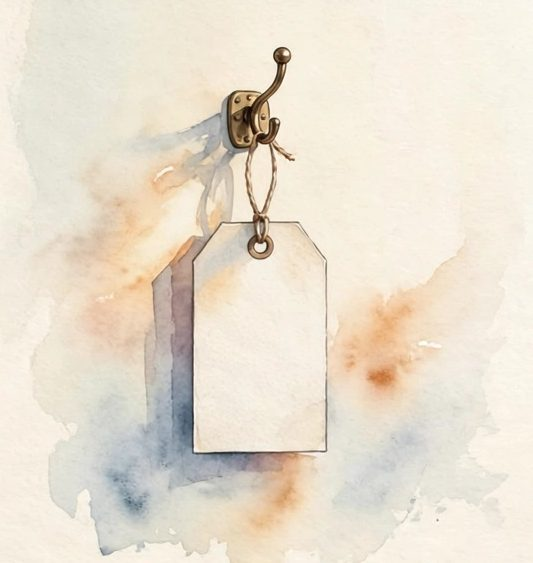
An empty coatroom at opening time, hooks in a row, waiting.
Every house in this estate begins with a room, and this house begins with a question. Who am I without my labels? It is not asked in anger, and it is not asked in despair. It is asked the way a keeper asks it at the door, pleasantly, before taking your coat: may I hang this up for you? The question sounds simple because the words are simple. It becomes difficult only when we try to answer it and discover how many of our answers were hanging, all along, on hooks we did not build and names we did not choose.
So the house offers one principle at the threshold, and offers it once. Every label is a coat checked in a coatroom. The given name, the nickname, the title, the trade, the reputation, the paper in the file — each was handed to someone, at some door, by somebody, for a reason that made sense at the time. Coats are useful things. They keep the weather off, they carry what the hands cannot, and they tell the keeper which hook to use. But nobody, in any coatroom in the world, has ever been their coat. The coat hangs. The person walks on.
Walk the halls slowly, then. There is no undressing ceremony here and nothing to renounce. The coats will be exactly where you left them, brushed and waiting, when you come back for them. What the house hopes you will notice, room by room, is smaller and stranger than renunciation: that someone was standing in the coatroom before the first coat was ever hung up, and that someone has been standing there, patient and unlabelled, through every arrival and every departure since. The coats change with the seasons of a life. The one who checks them does not.
2The Coatroom of a Life
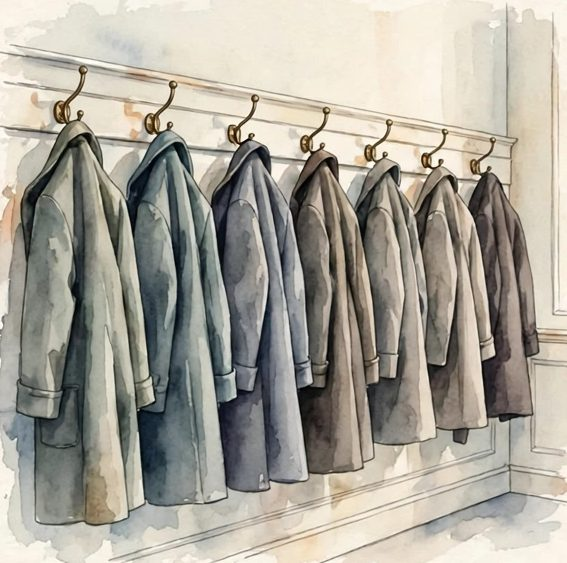
Rows of coats in winter light, each with its own weather still on it.
Nobody plans a coatroom. It accumulates. A child is handed a name before he can object, a schoolboy a nickname before he can spell it, a young man a trade, a title, a reputation in other people's mouths. One hook at a time, politely, in the ordinary course of things, the row fills up. By middle age the coatroom of a life is a crowded and respectable place, and the keeper can find any coat in the dark. That is precisely the trouble. We learn the room so well that we stop noticing the one who walks through it bareheaded.
Look along the row with fresh eyes and every coat tells its season. Here is the heavy one from the years of being needed by everyone. Here is the bright one, worn to be admired, still faintly surprised that admiration warmed so little. Here is the one with the mended cuff, the one from the city you left, the one you keep meaning to give away. Each was genuinely worn. Each kept out a real weather. The coatroom is not a museum of mistakes; it is the honest wardrobe of a life that went out in all weathers and came home again.
The keeper keeps the register, and the register is accurate, and still the register is not the guest. That is the coatroom's one quiet lesson, repeated in every hall of this house. A life can be fully documented and entirely missed. The coats can be counted, dated, described, and valued, and the essential fact will still be standing by the door in its shirtsleeves, unrecorded. When you leave this room, take whichever coat the day requires. Only remember, as the keeper hands it over, which of the two of you is doing the wearing.
3Every Label Was Handed to Someone
It is worth pausing on a small grammatical fact that turns out to be a large human one. Every label was handed to someone. Labels do not grow on people the way hair grows, or arrive the way height arrives. They are passed across counters — by parents, teachers, employers, officials, friends, enemies, and committees of all sizes. Somebody filled in the form. Somebody spoke the name first. Somebody decided that this word, of all words, would be the one pinned to this person. Behind every label in the coatroom there is a handing-over, and behind the handing-over, a hand.
This is not an accusation. Most hands were kind, or at least busy, and many labels were gifts: the name chosen with love, the title earned with years, the nickname that meant you belonged. The house does not ask you to audit the givers. It asks something simpler and more unsettling — to notice that what was handed over can, in principle, be handed back, hung up, exchanged, or left on its hook for an afternoon. A thing received is a thing held, and a thing held is not the same as the hand that holds it, however long the holding lasts.
Stand in the coatroom long enough and a gentle comedy appears. We defend labels we never chose as if we had written them ourselves. We polish titles handed to us by strangers and grieve inscriptions made by people who have forgotten making them. The keeper finds this entirely human and says nothing. But the register tells the truth in its plain columns: date received, from whom, condition on arrival. Nothing in the register says essence. Nothing in it says soul. It records deliveries. What was delivered to you is yours to carry — it was never required to be you.
4A Label Is a Handle, Not the Thing
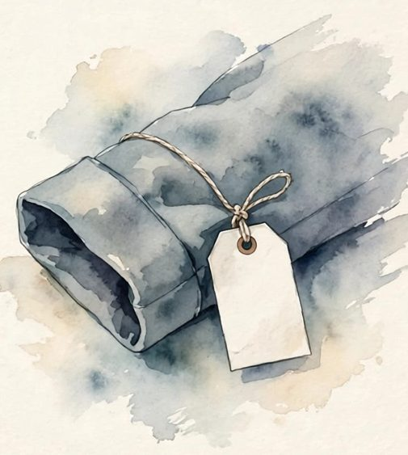
A suitcase handle, worn smooth, the case itself closed and unopened.
A handle is a fine invention. It is how a heavy thing gets carried, how a stranger knows where to take hold, how the keeper lifts your coat from the hook without touching the coat itself. A label works the same way. Your name is how the world takes hold of you: how the letter finds you, how the introduction lands, how the story about you gets carried from room to room. Handles are for other people's convenience at least as much as for yours. Confusing the handle with the thing is the oldest error in the house.
The error is understandable, because handles are what we can see of one another. We meet the title across the desk, the reputation before the person, the diagnosis in the file before the patient in the chair. We shake the handle warmly and believe we have met the man. Whole institutions run on this confusion, efficiently and without malice, the way a coatroom could run for years on tickets alone, never once looking up. The house merely suggests looking up. The person is invariably more interesting than the grip by which the world has learned to carry him.
There is also mercy in the distinction, for the days when the handle is wrong. Misjudged, misnamed, introduced by the one thing you did years ago — the handle creaks in strangers' hands and the suitcase itself is unharmed. You can set a handle down. You can have a new one fitted. You can carry the case yourself, by its corners, the awkward honest way, until a better handle comes along. The thing itself was never the grip. It travels on, intact, under whatever name the station happens to call.
5The Weight of a Full Pocket of Names
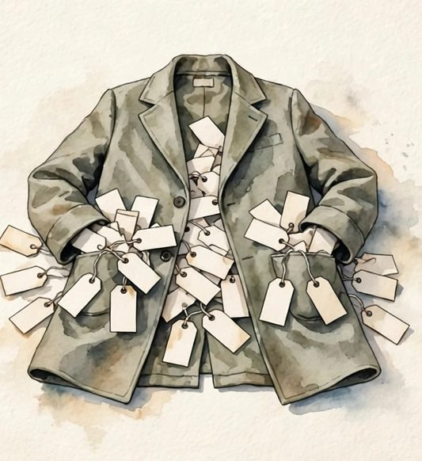
A coat sagging on its hook, pockets heavy with keys, cards, and paper.
Coats grow heavy in the pockets. The keeper knows this; he can tell, lifting a coat from its hook, roughly how documented a life has become. Names collect like the contents of pockets: the full name for officials, the short one for friends, the title for the office, the old nickname that surfaces at reunions, the username, the patient number, the former this and the acting that. Each is light. Paper is light. Cards are light. It is the sum that bends the shoulders, somewhere around the fortieth year, into their permanent slight stoop.
The weight is not the names themselves but the maintenance of them. Every name must be lived up to, answered for, kept consistent with its file. The good name must be defended, the professional name fed, the family name honored, the reputation — that hungriest coat of all — brushed daily against other people's weather. A person can spend the strength of a morning before breakfast simply being, in sequence, everyone he is called. No wonder the saints in the old pictures look so rested. They had arranged, one way or another, to answer to a single name.
The coatroom offers no diet for this, only a hook and a pause. Hang the whole armful up, now and then, even for an hour. Walk the garden as nobody in particular. The names will not evaporate; names are durable, that is their function and their nuisance. But an hour unpocketed teaches the shoulders what they had forgotten — that the weight was carried, and therefore can be set down, and therefore was never the same thing as the back that carried it. The keeper returns everything on request. He simply notes who walks straighter on the way out.
6You Are Not the Sum of Your Tags
Arithmetic is a tempting heresy. Add the tags, we think, and you will get the person: son plus trade plus title plus diagnosis plus reputation plus the three adjectives everyone uses, total at the bottom, person complete. The house respectfully declines the sum. A bundle of tags can be added, weighed, filed, and cross-referenced, and the person will still not be in the bundle, the way a coatroom's inventory, perfect to the last button, contains no guest. Addition works on things that are made of parts. Whatever you are, you are not made of your descriptions.
Notice how the sum always fails in practice, even before philosophy gets to it. The tags contradict: the same man is the reliable one at work and the hopeless one at home, the success in one register and the cautionary tale in another. Sums do not contradict themselves; people do, cheerfully, before lunch. And the tags lag: they describe who was here last season, pinned by people working from old information. The person, meanwhile, has quietly changed coats twice. Any arithmetic that must be corrected daily by its own subject has confessed what it is: bookkeeping, not being.
So the register stays open and the total stays blank, and the house considers this good accounting. You are not the sum of your tags because sums can be finished, and you, inconveniently and gloriously, are not. Keep your tags in order — the world runs on them, and the keeper needs them to find your coat. Just decline, in the privacy of your own mind, to sign the total. The unsigned line at the bottom of the page is not an omission. It is the exact shape of the space where the person stands, unadded, whole, and still counting for nothing the counters can name.
7Checked at the Door
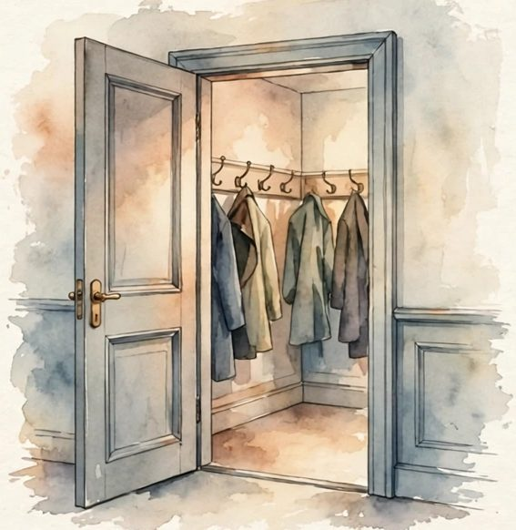
A brass ticket, freshly stamped, resting on the counter by the door.
Every respectable house has the same arrangement at its entrance: the wet, heavy, outdoor self is checked at the door, and a small brass ticket is given in exchange. We do this with labels more often than we admit. At the door of a new city, a new job, a new love, we hand over the old coats — the hometown reputation, the former title, the story everyone back there tells about us — and walk in strangely light, holding only a ticket. The lightness frightens some people. Others recognize it, correctly, as the feeling they have been homesick for.
What is checked is not lost; that is the whole dignity of the system. The keeper writes it in the register, hangs it in order, and guards it against moths and misunderstanding. Your past, your titles, your accumulated names are safer in the coatroom than they ever were on your back, where every room you entered demanded you wear all of them at once. Checking a coat is not disowning it. It is trusting the house with it while you go in to dinner as the person the dinner actually invited, rather than as the entire archive of everyone you have been.
And when the evening ends, the ticket decides nothing about who claims the coat. That is the detail the house loves most. A ticket can be lost and the coat still claimed, by description, by memory, by the keeper who saw your face at the door. Identity, at the end of the night, is established the old way: by recognition, not by paperwork. Present your ticket if you have it. If you have lost it — as travelers, mourners, and beginners regularly do — describe yourself truly, and watch the keeper go straight to the right hook.
8What the Mirror Doesn't Say
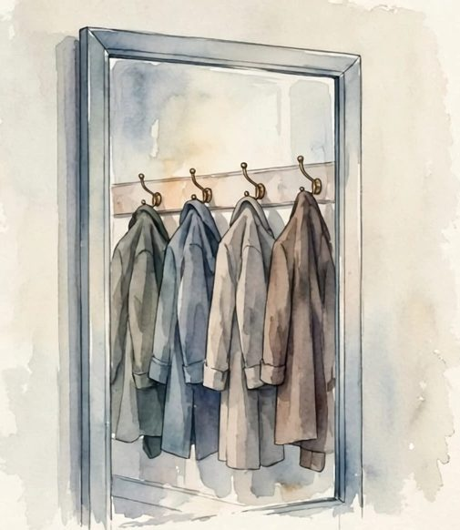
A long mirror in the coatroom, reflecting hooks and coats, no face.
There is a mirror by the coatroom door, as there should be, for the final adjustment before going in. People consult it the way they consult all their surfaces: for the verdict. Is the coat right, the title sitting straight, the hair — that most negotiable of labels — behaving? The mirror answers faithfully and completely, and everything it says is about the arrangement of surfaces. It has never once, in all its years of service, said a word about the one standing in front of it. Mirrors are honest the way registers are honest: within a column, perfectly; beyond it, silent.
We have more mirrors now than any generation before us, and most of them talk. The profile, the photograph, the metrics, the reviews of one's own life written by audiences — each holds up a polished account of how the coat is sitting. It is possible to spend a whole modern day moving from mirror to mirror, adjusting and re-adjusting, and never once meet the person being adjusted. The house is old-fashioned on this point. It keeps one mirror, by the door, for coats. For the person, it keeps a chair, a window, and time — the older instruments, slower and far more accurate.
So straighten the coat if it needs straightening; there is no virtue in a crooked collar. Then notice the precise moment the mirror runs out of information. It can show you everything you are called and nothing that you are. The face it returns is the face the world will use, and that is genuinely useful to know. But the one who is looking — the looker behind the face, present before the glass was hung — does not appear in it, and never did. Walk in, then, unreflected and entire. The mirror keeps the coats' secrets. It was never given yours.
9Labels Stick; People Don't
Labels are adhesive by design. They are made to stick through weather, travel, and handling, and the good ones do — ask anyone still answering, at fifty, to a schoolyard verdict delivered at nine. People, meanwhile, are made of less durable material and better stuff: they change their minds, their cities, their trades, their hearts. The label says former, always, never, the one who. The person quietly becomes someone the sentence no longer fits, and goes on living in the gap between the tag and the truth. That gap, unglamorous and unwitnessed, is where most of a life actually happens.
The sticking is not malice; it is filing. Other people cannot re-register us daily — they have their own coatrooms to run — so they keep the ticket from the first visit and work from it for decades. We do the same to them, and should remember that we do. The aunt is still the difficult one for a remark made in another century. The colleague is still the promising one, long after the promise moved house. Everyone is walking around in somebody else's old handwriting. The house does not scold the filing clerks. It simply keeps a solvent on the desk: attention, applied fresh.
The practical mercy follows at once. If labels stick and people don't, then no verdict on you — including your own, especially your own — is required to be permanent. The coat can be re-tagged. The register accepts amendments in any hand, at any hour, without a fee. What cannot be amended is only what was never a label in the first place: the one who keeps arriving, season after season, to have his coats re-described. Peel gently, then. Under every old label there is not a newer label. There is the leather itself, unmarked, that carried them all.
10The First Label You Ever Wore
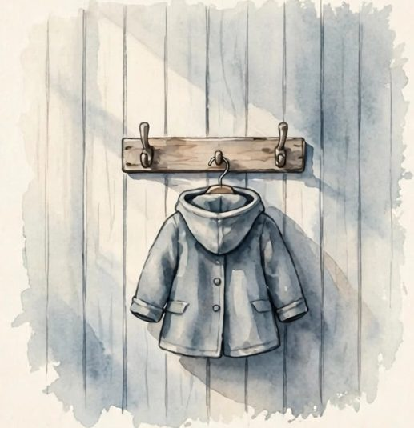
A small first coat on a low hook, outgrown, kept anyway.
Before the name settled, before the papers, there was usually a word. The first label most of us ever wore was spoken over a cradle by tired, happy people doing their best: a big baby, a quiet one, a difficult birth, an old soul, the image of his grandfather. It was not a description; descriptions come later, with evidence. It was a welcome dressed as a fact — the world's first attempt to say who had arrived, made within hours of the arrival, by people who had not yet been introduced. And it stuck, as first labels do, with the unfair strength of anything said first.
Families keep these labels the way the coatroom keeps the small first coat on its low hook: long after it could possibly fit. He was always the shy one. She was the strong one from the very beginning. Whole childhoods are tailored to these early verdicts, and whole adulthoods spent quietly re-cutting the seams. The house passes no judgment on the tailors; they worked with love and no pattern. But it keeps the little coat behind glass for a reason. Look how small the first story about you was. Look how much of you has lived outside it.
There is tenderness available here, if you want it, toward everyone in the story. The label-givers were also once labeled, in other cradles, by other tired voices. The chain of first words runs back out of sight, each generation handing the next a coat sewn from its own hopes. You cannot rewrite the first label; it is in the register's earliest hand. You can only outgrow it in public, year by year, until the discrepancy is obvious to everyone including yourself. The hook keeps the coat. The coat keeps nothing. It never held you in the first place.
11Borrowed Coats
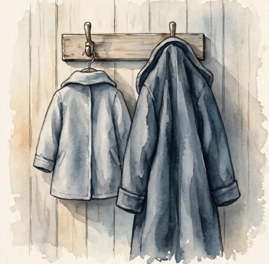
Two coats exchanged on adjacent hooks, a note pinned to each collar.
Not every coat in the row is yours, and the keeper, if pressed, will admit the register is not strict about this. There is the father's trade, worn for a decade out of love and returned with relief. There is the mentor's manner, the famous man's opinions, the family's coat of respectability that everyone takes turns wearing to funerals. There is the borrowed confidence of a uniform, the borrowed sorrow of a cause, the coat of the person you were briefly engaged to become. Borrowed coats are not hypocrisy. They are how a person tries on a life before committing to the weather of it.
The trouble begins only when the borrowing is forgotten. A borrowed coat worn long enough starts to feel like one's own skin — its pockets fill with your things, its elbows shine with your years — and one morning you defend it as your identity against the very people who lent it. The house sees this often and without surprise. Whole professions are borrowed coats with excellent pensions. Whole feuds are fought over coats neither party owns. The keeper's advice is bookkeeping, not morality: keep the loan tickets. Knowing a coat is borrowed is not a betrayal of it. It is the condition of returning it with thanks.
And some borrowed coats, honestly recorded, become the best chapters. The teacher's patience, lent until it grew in you. The friend's courage, worn through one bad winter and never quite given back, with permission. The register has a column for this too, though it is rarely used: transferred, with gratitude. What the house insists on is only the distinction between the loan and the skin. Try on whatever life offers — that is what coatrooms of the world are for. But sleep in your own name. The borrowed splendor goes back on its hook at night, and the one who remains is the guest.
12The Door of the Coatroom
Every room in this house is best understood from its door, and the coatroom's door stands open by policy. It is the busiest threshold in the building: coats arriving, coats departing, the keeper's pencil never still. Stand there a moment before going deeper in. From the doorway the whole system shows itself at once — the hooks, the register, the mirror, the small first coat, the borrowed ones with their notes. It looks like a room about clothing. It is a room about custody: who holds your names while you are busy being a person, and on what terms you take them back.
Notice, from the door, what the room does not have. There is no lock on the inside. There is no examiner, no tribunal, no desk where a case is made for keeping a label or surrendering one. The house is not a court and the keeper is not a judge; he is staff, and this is a service. People imagine that setting down a name must be a drama — a renunciation, a reinvention, a scene. Mostly it is this: a coat, a hook, a ticket stub, and dinner waiting in the next room. The door is wide because the errand is small and the freedom is ordinary.
Go through, then, into the halls of names and titles and verdicts, and take the coatroom's door with you as a rule of thumb. Behind every label you are about to meet there is a doorway exactly this plain: someone arrived, something was handed over, someone walked on in. What was checked can be reclaimed; what was borrowed can be returned; what never fitted can be left for the lost-property shelf. The door does not close behind you. It was never that kind of door. It only ever asked that you notice who does the walking through it.
13The Name You Were Given
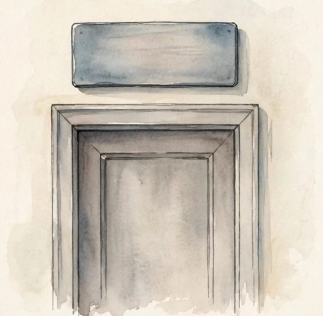
A name entered in a family register, the ink still darker than the page.
Of all your coats, the given name is the one you had least say about, and it arrived before everything else you own. You were named the way houses are named — by people standing in the doorway of your life before you had furnished a single room of it. They chose from their hopes, their dead, their languages, their fashions: a grandfather restored, a saint enlisted, a sound simply loved in the mouth. It is an extraordinary act of faith, naming. It announces a whole biography for a person who has so far contributed only a cry and an appetite.
And yet the given name has a strange durability that has nothing to do with its fit. It survives every reinvention. Change your city, your trade, your opinions, your gods — the given name follows like a first language, surfacing at borders, in hospitals, in the mouths of the very old who knew you when. This is not because it describes you best. It is because it was there first, and the world keeps its earliest paperwork. The register's first line is written in another's hand, and every later entry is, in a sense, correspondence about it.
The house suggests a truce with the given name, whatever yours is like. It is neither a prophecy to fulfill nor a clerical error to spend a life correcting. It is the coat on the lowest hook of your history — the first thing handed to the someone who would spend decades deciding what to make of the hand. Some grow into their names like heirs into a house. Some renovate. Some quietly answer to it all their lives while living under another name entirely in the country of themselves. All three are legitimate. The name was given. The life is the reply.
14Nicknames: Labels with Affection
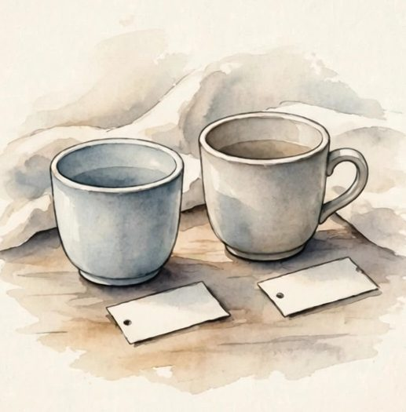
A coat with a pet name stitched inside the collar, in bright thread.
The nickname is the label the coatroom staff sew on themselves, usually inside the collar, in thread that doesn't match. Given names come from the register; nicknames come from the corridor — from the people who actually watched you live. They are almost never dignified. They commemorate the haircut, the incident, the saying you said once in 1987 and have been saying, in other people's mouths, ever since. And they are, nearly always, the most accurate labels a person owns, because they were made by witnesses rather than by authorities. Affection is a sharper observer than administration.
Notice what nicknames do to the great machinery of identity: they shrink it to parlour size. The director, the defendant, the distinguished guest — all are somebody's Shorty, or Professor, or Captain, in the rooms where they are actually known. A nickname is the world's way of announcing that the official coat has been seen through, kindly, and a smaller, warmer one issued in its place. It cannot be requested. It cannot be self-awarded without instant detection and doubled ridicule. It is conferred, like knighthood, by acclamation, and it can be revoked by history at any time.
Keep yours in good humour, then, whatever it is. The nickname is proof of a life observed at close range — nobody nicknames a stranger, a résumé, or a monument. If the great question of this house is who you are without your labels, the nickname offers a clue from the far end: it is the label that comes closest to the person precisely because it takes the person least seriously. Under the pet name, stitched in bright thread where only intimates look, the coat admits what all coats know. The wearer was loved in it. That is the best any label can hope to say.
15The Name You Answer To
There is the name in the register, and there is the name that makes you turn around in a crowded station. They are not always the same. The name you answer to has been elected by long use — tested in kitchens, called across fields and hospital corridors, shouted in love and in warning — until it lives below thought, in the part of you that turns before deciding to turn. Governments can amend the register. They cannot amend the turning. Ask anyone who has changed their name how long the old one kept catching their ear, like a coat still warm from another body.
Answering is a deeper act than we credit. To answer to a name is to accept, for that moment, the whole history filed under it — the summonses and the endearments alike. That is why it costs something to answer, some days, to the names we are called: the full formal one that means trouble, the childhood one that means being eight years old again in someone's expectations. And why it is a small daily freedom to choose, gradually, by use and custom, the name at which your head will turn — to let some calls go past like trains for other towns.
The house keeps a benevolent eye on this door of the self. You will answer to many names in a life, some for an afternoon, some for fifty years, and each answering is a small treaty between the world's filing and your own. The treaties expire. The one who signs them does not. When the last summons has been answered and the station empties, something in you will still be listening — not for a name, exactly, but the way a person listens in their own house at night. Underneath every name you answer to, that listening is the truest address you have.
The Coatroom Desk
One desk receives all correspondence for this house — questions, corrections, greetings, and labels you are thinking of retiring. It is read in the order it arrives.
16A Name in Another Language
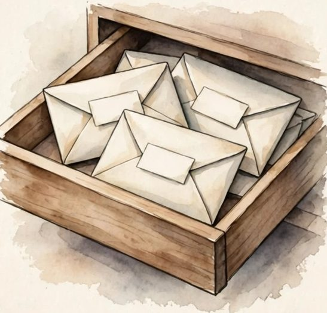
The same coat ticket printed twice, in two alphabets, side by side.
Cross a border and your name goes to the translator with everything else you own. It comes back altered: softened, sharpened, re-spelled, sometimes reborn entirely — the consonants that were furniture at home become luggage abroad. People apologize for your name in other languages more than for anything else about you. They needn't. A name in another language is a useful early lesson in this house's whole doctrine. The sound changes, the spelling changes, the very letters change their alphabet. The person paged at the foreign station stands up all the same, ticket in hand, entirely himself.
Exiles and emigrants know the further chapters. The name gets a local version, worn outdoors like a coat cut for the climate, while the home version hangs in a private closet, taken out for family and for grief. Some names are translated outright; some are traded in, at school or at the registry office, for something the new country can carry without dropping. None of this is falseness. It is tailoring. And through every version runs the comic, consoling evidence of the coatroom: if the label can be reprinted in another alphabet without the person being diminished by a single gram, the label was never the person.
There is a pleasure here too, and the house recommends taking it. To hear your name said beautifully wrongly, in a language that loves different sounds, is to hear it as music instead of as paperwork — perhaps for the first time. Collect the versions if you travel. The register tolerates them all, in the margins, in several hands. One day the row of them reads like the stamps in a well-used passport: many countries, many spellings, one traveller. The name was translated a dozen times. The one it names crossed every border untranslated, and still does.
17The Name on the Envelope
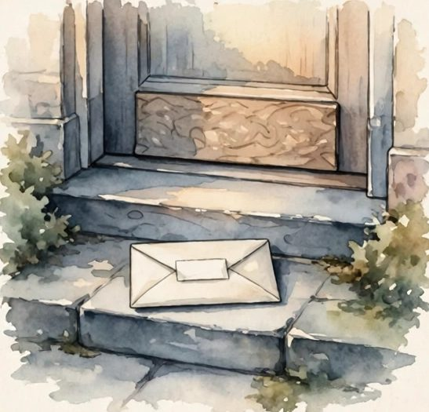
A letter on the hall table, the name on it in careful official script.
The name on the envelope is the most formal self you own. It wears its full length — all the initials, the whole ancestry of the signature — because envelopes are where the world's institutions address you, and institutions prefer the complete coat. Tax, law, medicine, inheritance: the long name is summoned for the serious mail. Most of us meet it first as children, reading a letter addressed to someone who sounds considerably more important than the parent at the kitchen table, and learn the house's lesson early without knowing it: the same person, in slippers, answering to a syllable and a half.
There is a small ceremony in opening such mail. The envelope name sits in judgment before the contents are even known; it is the self as the state imagines it, punctual, documented, continuous with its file since birth. We straighten up for it involuntarily. Then we put the kettle on, in the other name, in the other coat, and read the summons as the person we actually are. Both are real. Only one makes tea. The coatroom sees no contradiction — the archive self and the kitchen self share a keeper, and the desk holds both their correspondence in a single drawer.
Age improves the joke. The envelope name accumulates titles the way the coat accumulates pockets; the salutations lengthen; the person addressed grows more monumental on paper as he grows, in the flesh, more interested in soup and weather. The house keeps a few such envelopes in a drawer, unopened a long time, as exhibits. Look at the magnificent name, they say. Look at the complete official coat. Then the keeper will tell you, deadpan, that its owner is out in the garden, answering to something his grandmother called him, and will be in for tea at four.
18Mispronounced, and Still You
Everyone has heard their name destroyed in public and survived it, which is more than can be said for the name. The syllables come back rearranged, stressed in impossible places, fitted with vowels from another continent. A hand goes up anyway — yours. The room laughs, the speaker apologizes, and something ancient and important has been demonstrated in front of witnesses: the label bent almost to breaking, and the person arrived anyway, coatless, unbothered, responding to an intention rather than to a sound. Correctness, it turns out, was never what carried you into rooms.
It is worth being precise about the small sting involved, because the sting is the teacher. To be mispronounced is to feel, for one second, the filing system slip — the fear that if the word is wrong, the person might not be findable, might be lost in the register among the coats. Children feel it strongly; travelers feel it weekly; the elderly, renamed by every new clerk, feel it with compound interest. The house's consolation is empirical. In all the centuries of mispronunciation, no one has yet been mislaid by it. The keeper works from faces. He has heard every name said wrong and has never once hung a guest on a hook.
So correct them gently, or don't — the ethics are local and the house takes no position. Only collect the evidence. Each mangled version is a fresh experimental proof that you are not stored under your pronunciation. The maître d' calls something unrecognizable; you rise, entirely yourself, and are shown to your table. Somewhere in that small daily miracle is the whole of this hall's teaching: the world will get your name wrong in a hundred ways before it is done with you. It has never yet, not once, gotten the wrong person by accident.
19The Name You Outgrew
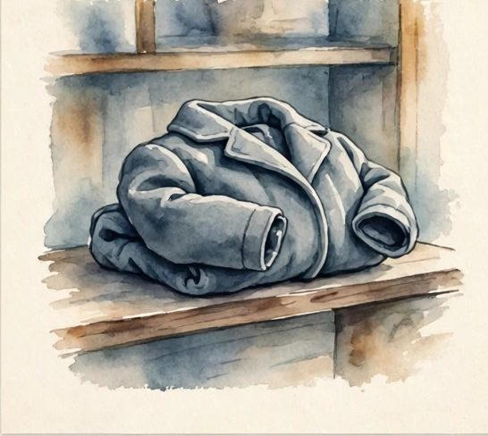
A child's coat with the sleeves long outgrown, hanging beside a man's.
Some names are outgrown the way coats are outgrown: gradually, then in a single photograph. The diminutive that suited a boy of six is still being worn, by family's inertia, on a man of forty with a mortgage, and everyone at the table can hear the seams. Outgrown names are not false names. They were true, once, to a person of a certain height, and the affection in them is real. But a coat that fitted at six is a costume at forty, and the wearer knows it every time the old syllables come across the room at him in company.
Renegotiating is delicate work, because the outgrown name is never only yours. It is also the property of everyone who loved you small. To retire it can sound, to the ears that coined it, like retiring the child — or worse, like correcting the love. So most people negotiate by degrees: the short form here, the full form at work, the old name tolerated at holidays like a song everyone knows is out of date. The register, flexible as ever, carries both entries for decades. Meanwhile the person, coat by coat, grows into the size of himself, which no one at the cradle could have measured.
The house honours the outgrown names by keeping them, not by insisting on them. They belong on the low hooks with the other early coats — visited, smiled at, never forced onto anyone's shoulders at a family gathering. There is a dignity in having been small enough to need a smaller name, and a dignity in no longer fitting it. Between the two dignities stands the whole biography. Wear what fits now. The keeper will alter the register without comment, and the small coat will hang in honourable retirement, a record of heights once true and long since, joyfully, exceeded.
20Names Other People Shorten
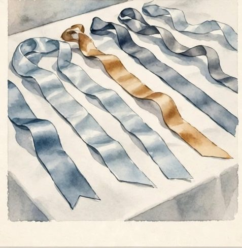
A long name pencilled down to two letters on a delivery note.
Given half a chance, the world shortens every name it is handed. The long ceremonial word you were registered under comes back from its first week among people trimmed, clipped, rhymed, or fitted with a suffix never authorized by any registry. This is usually described as carelessness. The house files it differently: shortening is what language does to anything it intends to use daily. Nobody shortens what they do not expect to say often. The full name is for envelopes. The short one is for the hundred small summonses of an ordinary day — and ordinariness, in the end, is where a life is mostly lived.
There is nonetheless a border, and everyone knows when it has been crossed. A name shortened by intimates is a coat taken in by loving hands; the same shortening performed by a stranger, a superior, a salesman with a script, is a hand laid on your coat without permission. The syllables are identical. The custody differs. That is why we bristle or melt at the same word from different mouths: what is being negotiated is never the name. It is the relationship — who may handle the label, and how familiar their hands are allowed to be with the person under it.
Let the register show both forms, then, in whatever hand history wrote them. The long name stands for the record; the short one runs the household. Neither is the truer you — they are two lengths of the same coat, formal and everyday, and the wearer decides the weather for each. The house's last word on shortening is a keeper's observation. People shorten names the way they shorten paths across a lawn: by walking them, together, often. The worn track across the grass is not vandalism. It is the map of a route two people actually travel, drawn by their feet.
21The Name You Sign
Of all the forms your name takes, the signature is the one you manufacture yourself — the single label produced by your own hand, thousands of times, until the hand stops consulting you about it. It begins as a child's laborious copy of the register's spelling and ends, decades later, as a few strokes of pure gesture: less the name than the weather of the hand that day. Clerks accept it as the most official thing you own. Graphologists read character into it. The house notes only the paradox. Your most legal label is the least legible one, and nobody minds. The scribble is believed because the hand was seen making it.
A signature is a coat you sew while wearing it. Young people practise theirs in notebook margins, trying on adulthoods — the flourish, the underline, the initial like a duellist's mark. The version that survives is rarely the most beautiful; it is the one that kept up with the paperwork. From then on it signs for everything: love letters and tax returns, consent forms and bookplates, the whole range of a life's yeses, all in the same three-second handwriting. We forget what our signatures have agreed to. The register does not. It can produce, on demand, the history of your assent, page by page.
Yet the house insists on the mercy hidden in the ritual. A signature binds the name, not the soul; that is why the law, in its better moments, allows signatures to be retracted, contracts annulled, names changed by deed and petition. What your hand signed at twenty speaks for what you then believed, in the coat you then wore. It does not garrison the future. So sign carefully, and sign honestly, and then walk on unalarmed. The ink dries. The hand that made it remains unwritten, and can lift a pen, on any ordinary morning, in a slightly different way than it did before.
22If You Could Choose Again
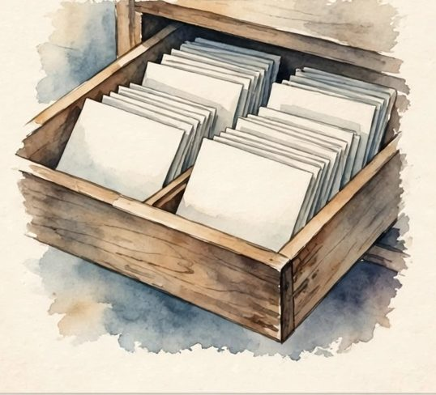
A blank space in the register, a pencil resting beside it.
A parlour question, in appearance: if you could choose again, what name would you take? People answer it lightly and reveal themselves completely. Some would choose grandeur — the name of a admiral, a novel's hero, a mountain. Some would choose invisibility, a plain name that opens no doors and closes none. Some, after a long pause that is the real answer, would choose their own name again, and surprise themselves with the loyalty. The coat, it turns out, has been worn so long that its patches and repairs have become a kind of autobiography. Choosing again means choosing another life, and most of us, at the counter, hesitate honestly.
The house keeps the question not for the answer but for the hesitation. In that pause you can watch a person discover the difference between the label and its history. The name itself — the syllables — may be nothing special; thousands share it without incident. What cannot be transferred is what the name has been through with you: the mouths that said it in love, the rooms it entered, the nights it was whispered over fevers. Rename a man and you do not give him a new coat. You give him a new label for the same worn and irreplaceable garment, and half the house will keep calling the old one across the hall.
Choose again, then, if the law and the heart agree — people do, and the register survives it, and sometimes a life opens like a window. Or keep the name, and know at last what you are keeping: not a word, but a companionship. Either way, the parlour question has done its work. You have stood for a moment outside your own label, considering it as an object, which means you have stood, for that moment, in the coatroom's great truth. The chooser was never up for renaming. Whatever word the pencil finally writes, the hand that writes it is the same hand that held it in the pause.
23The Name Spoken at 3 A.M.
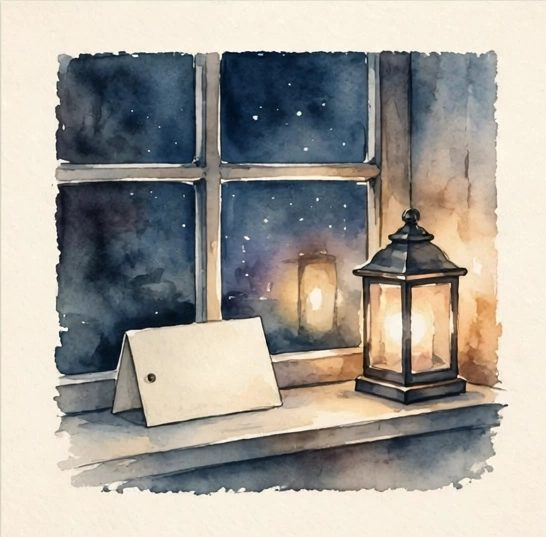
A telephone lit in a dark room, one name glowing on its screen.
There are names you are called at noon, among people, in the coat of the day. And there is the name — sometimes the same word, never the same sound — spoken at 3 a.m., in the country where no labels hold office. The voice at that hour is not performing introduction or summons. It is the voice of the person who knows where the spare key is, who has seen the coatroom with the lights off, who is not calling the title, the trade, or the reputation. At 3 a.m. the register is closed. What gets said then is said to the guest directly, and it is the plainest speech in any life.
Hear how the labels fall away at that hour without anyone removing them. The hospital corridor at 3 a.m. does not care about the business card. The kitchen at 3 a.m., with the bad news cooling on the table, has no use for the resumé. Even grief speaks in short names, the way the first label was spoken over the cradle — before evidence, as welcome and as claim. It is no accident that the deepest hours of a life rhyme with its beginning. Both occur in the coatroom's back room, where the coats hang in rows like sleeping animals, and the person stands among them in the dark, wearing nothing but being known.
Guard, therefore, the people who know the 3 a.m. version of your name, and be one of them for somebody else. The daylight world will supply labels in any quantity; it has warehouses. The night shift is run by a smaller staff. When your own dark hour comes — and the house, being honest, keeps this sentence in every hall — the labels will queue politely at the door and be no use at all. What will be of use is the name in the mouth of whoever is sitting up with you. Under all your titles, that is the register that matters.
24A Name Is a Door, Not a Room
A name, properly understood, is a door — and the whole mistake of a lifetime can be made by furnishing it as a room. A door is for passing through: it admits people to you, lets the post in, lets the years in, lets you out. It is meant to swing. A room is for staying in, and a name stayed in too long becomes a small, well-labelled cell: the person inside arranging and rearranging the one word on the door, polishing the letters, answering all correspondence from within. The house has seen this happen to fine names. The corridor outside is long, lit, and full of other doors, and the prisoner is the only one who cannot see them.
The correction is architectural, not dramatic. Doors have hinges precisely because they are not the house. Your name opens onto workrooms, gardens, other people's lives, the weather of decades — and it opens the other way too, letting you out of every version of yourself that a season has finished with. Use it both directions, daily, without ceremony. Let them call you in through it for dinner, for duty, for joy. Then walk through it yourself, outward, into the parts of your life that have no signage yet. A name kept in motion cannot harden into a cell. Hinges, oiled by use, are the whole secret.
The keeper, asked once which name in his register was the finest, surprised the questioner: he named one nobody remembers for anything, belonging to a guest who treated it most lightly — in and out all day like a neighbour, never standing in the doorway striking attitudes. That is the hall's final image, and the name's best ambition. Be findable at your door. Answer when they knock. Then leave through it, coat over your arm, into the unlabelled afternoon. The door will keep your name beautifully in your absence. It was only ever holding the entrance. You were always the one who lived beyond it.
25"What Do You Do?"
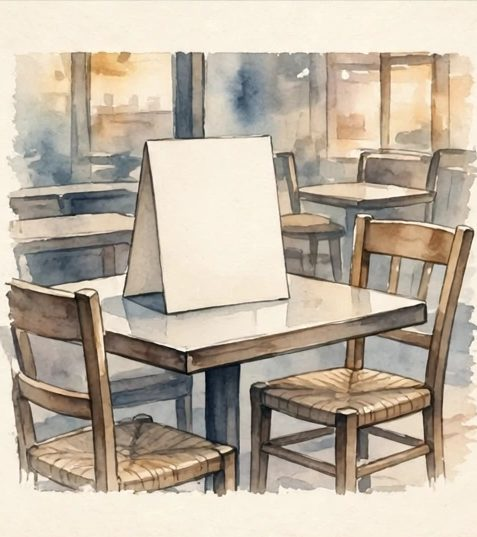
Two strangers at a party, glasses in hand, the question arriving on time.
It is the second sentence of modern acquaintance, arriving as reliably as the handshake: and what do you do? The question is not rude. It is a filing request, made by a stranger who has been given your name — a handle with nothing hung on it — and needs a hook to hang you on before the conversation can proceed. A trade is the readiest label in the adult coatroom, the one with the clearest register entry. So we answer with our coats: I am in, I work at, I run. Notice the grammar. The question asked what we do. We reply, almost always, with what we are — and hand over the label as if it were the person.
Watch a room work when the answer is missing or strange, and you will see the system's whole machinery strain. The between-jobs, the retired, the ones whose work has no title the century recognizes — the questioner falters, glances around for another hook, and often ends the conversation out of pure clerical embarrassment. It is not cruelty. It is a coatroom attendant with a coat he cannot classify, holding it out at arm's length. The house files this scene under comedy, fondly. Any system of labels that cannot file a person at leisure is a system that has confused its shelves with the world.
You are allowed, within politeness, to answer the question sideways. Say what your hands are learning. Say what the days contain. Say the true, unserious thing and watch the stranger's relief when the filing gives way to an actual face. The trade is a fine coat and often a proud one — the next rooms of this hall treat it with respect. But the person who does the work existed before the work did, apprenticed first to being alive. What do you do? Many things, in the end. And under all of them, quietly, the doing is done by someone the question never quite reached.
26The Title on the Door
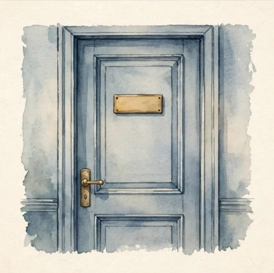
A frosted-glass office door, a title lettered on it in gold.
The title on the door is the most architectural of labels: it is not worn, exactly — it is installed. It outlasts the day's work because it is not about the day; it is lettered in gold on frosted glass to announce, to anyone in the corridor, the rank of the coat inside. Titles on doors have real uses. They tell the lost where to knock, the junior where the decisions live, the visitor which voice in the room is accountable. A corridor without them is a fairground. The house, which keeps a register and values order, has no quarrel with lettering.
The interest lies in what the lettering does to the lettered. A title on a door is overheard by its owner every morning, and like anything overheard daily for years it moves in. He begins to answer to it in his private thoughts. He consults it before consulting himself. Decisions are no longer made; they issue. The coat, hung on the door where all can see it, achieves what no worn coat quite manages: it starts to look like the building. And when the building is eventually sold, renovated, or gently demolished — as buildings are — the man stands in the corridor holding a piece of frosted glass, wondering where he has gone.
The house's remedy is a tradesman's, not a philosopher's: keep the title screwed to the door, not to the person. It is a fitting, not a limb. When you hang up your coat at night, the lettering stays in the corridor doing its quiet institutional work, and you go home under your other names — the short one, the 3 a.m. one, the one the dog recognizes. A title that cannot be left at the office overnight has not been properly installed. The keeper oils the hinges of this door with special care. It should open easily, both ways, for as long as you hold the office — and release you cleanly on the day you don't.
27Retired Is Not a Name
Retired is the strangest label in the register, because it describes a coat by its absence. Every other title says what its wearer does; this one announces what he has stopped doing, and then — the filing system's final joke — expects to serve as his introduction for thirty years. At dinners the retired are presented by their vacancies: formerly of the firm, late of the ministry, once the man who. The coatroom has a whole quiet wing of these labels, hung like flags after the parade. They are handled with respect here. But the keeper will tell you, if asked, that no one in the wing ever answers to them at breakfast.
What actually happens in retirement is more interesting than the label. The trade retires; the capacities do not. The engineer's eye still reads every bridge like a sentence. The teacher still explains, to grandchildren, to neighbours, to the fortunate stranger on the train, with the old unstoppable clarity. The hands keep their knowledge the way rivers keep their courses — not by employment but by nature. Retirement reveals, better than any other season, which parts of the work were the job and which were the person all along. The job goes to the register's back pages. The person, unpensioned and unpensionable, reports for duty at the garden gate.
So let retired be a date, not a name. It belongs in the biography, in the past tense, in the column the register keeps for closures — a genuine honour, fully earned, filed. The present tense belongs to whoever is standing in the coatroom now, trying on mornings with no agenda in them, which turns out to be skilled work of a high order. People ask what he does all day, meaning the label has gone silent. He is doing the thing the label spent fifty years pointing at. He is being the one who did all that. The past is complete. The person, noticeably, is not.
28The Trade in Your Hands
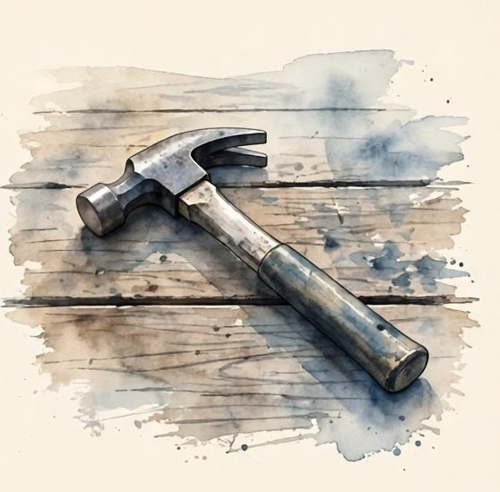
Hands at a workbench, sleeves rolled, a tool worn to the shape of its grip.
Before the title, before the card, before the lettering on any door, there is the trade in the hands. It is the least verbal of all labels — a knowledge stored below language, in the fingers, that no reorganization can reach. The carpenter's hands know the lie of grain the way the tongue knows its mother tongue. The nurse's hands find the vein in bad light. Ask the hands to explain and they will disappoint you with words; give them the work and they will lecture brilliantly for hours. A trade, at this depth, is not a coat. It is closer to a gait — the way a person walks through material, recognizable across a room.
This is why losing a job and losing a trade are different griefs, and why the register keeps them in separate columns. Jobs are checked in and out like coats — employers, premises, titles, all returnable. The trade stays with the keeper's guest himself, in the one storage no bailiff can inventory: the trained body. Economies may stop ordering what the hands make. The hands do not forget the making. Old tradesmen demonstrate this in every kitchen and garden shed in the world, turning out, for love and neighbours, work their industry declared obsolete — and the work is good, which is the hands' quiet rebuttal to the industry.
The house places this room early in the hall on purpose. When titles later blow away — and this hall is honest that they do — the trade in the hands is the ground a person lands on. It is proof, carried in one's own person, that the labels were never the substance: the substance was competence, patience, the feel of the material, all acquired one ordinary day at a time and now inalienable. Titles describe you to the corridor. The trade describes you to the workbench. And the workbench, which has never read a business card in its life, knows exactly who you are.
29Between Jobs, Between Names
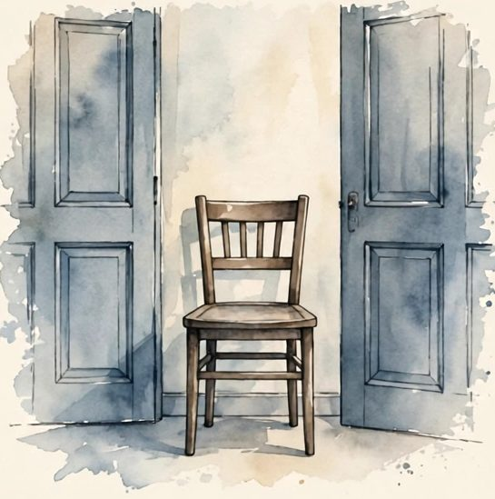
An empty hook between two occupied ones, a coat over one arm, mid-decision.
Between jobs, the filing system loses you. It is an odd, airy, slightly disgraceful feeling — the conversation at the party dying at the same question, the form demanding a current occupation in a box too small for the truth. The label-making world runs on present-tense titles, and a person in the interval embarrasses it the way a guest embarrasses a coatroom by arriving between seasons, neither winter coat nor summer jacket in hand. The keeper alone is unembarrassed. He has seen this weather before. Intervals are his profession's oldest scenery, and he keeps a hook for them, unnumbered, between the numbers.
For the interval is not an exception in a working life; it is one of its regular rooms. School ends before work begins. The firm ends before the venture. The trade ends before the retraining, the country before the country, the whole labelled world before and after every border, birth, illness, and reinvention. Added together, the between-times of a life can total years — years in which the person was entirely present and officially unwearable. If the labels were the life, those years would be blank. Nobody who has lived one remembers it as blank. They remember it as the year everything was decided, or survived, or learned in the dark.
So the house refuses the disgrace. Between names is a place, with a bench, and the bench is good for sitting on while the next coat is altered. Some of the finest guests in the register did their growing exactly here, out of uniform, answering the party question with a shrug that took more courage than any title. The interval strips the labels because it is a passage, and passages are for travelling light. Walk it without apologizing to the forms. A person between coats is not undressed. He is underway — and the coatroom, which exists for journeys, salutes him as its most typical guest.
30The Business Card Drawer
Everyone who has worked long enough owns the drawer: business cards by the hundred, one's own and everyone else's, sediment of a professional lifetime. The keeper keeps a tray of them in the coatroom as a teaching exhibit. Here are your own cards across the decades — the titles ascending, the logos changing, the same name in ever more senior type. Reading them in order is like watching a coat being let out, year by year, to fit an expanding reputation. And here is the comedy, visible only with the drawer fully open: not one of these cards, including the heaviest, ever introduced you to anyone who loved you.
The cards were not lies. They were tools — small stiff handles by which strangers could lift you into their filing systems, and they worked: the calls came back, the meetings happened, the corridor found its door. A card is the label in its purest, most portable form, all coat and no wearer, and for its purpose nothing better has been invented. The drawer becomes melancholy only when its owner starts reading it as a biography. A drawer of handles is not a life. It is the record of how a life was carried around by other people, one introduction at a time, between appointments.
Close the drawer gently, then, on the whole exhibit. Keep the cards; archivists and grandchildren will be glad of them, and the comedy is affectionate. But let the house have the last classification. In the register's final column, where the keeper writes what each guest actually was, there are no titles at all — he writes the thing the cards never mentioned: the quality of the company. The cards said who to call. History remembers who was worth calling. And the person himself, mercifully, was never in the drawer. He was out living the life the cards only pointed to, one unrecorded afternoon at a time.
The Coatroom Desk
One desk receives all correspondence for this house — questions, corrections, greetings, and labels you are thinking of retiring. It is read in the order it arrives.
31Rank, and the Person Under It
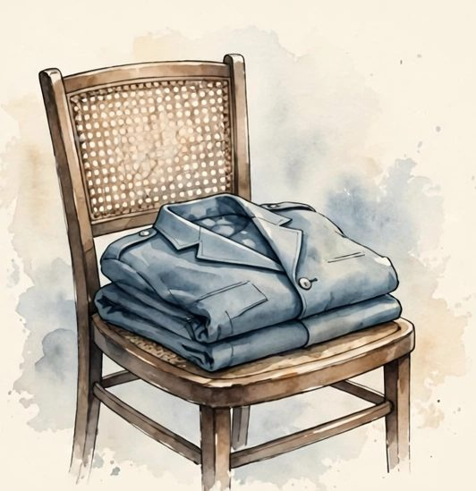
A uniform coat on a hanger, polished buttons, the hook numbered in brass.
Rank is the label worn closest to a uniform: it is designed to be read at a distance, in bad weather, by strangers who must decide in seconds whose voice settles the matter. Armies, hospitals, ships, and courts run on this legibility, and the house does not mock it. In an emergency, rank is a mercy — a coat that tells everyone at the fire whose instructions to take, so that nobody has to conduct interviews while the building burns. The insignia are punctuation marks in a loud room. They let the sentence of command be read at a glance, and lives are regularly saved by the clarity.
The difficulty is entirely interior. Rank, worn daily, administered respectfully by everyone in sight, begins to feel like a property of the person rather than a tool of the situation — like height, like eyesight. Then the parade ends. The uniform goes back to stores, the salutes redirect to a successor, and the man discovers which parts of the deference were addressed to the coat. It is the same discovery as retirement's, only starched. The house keeps a special sympathy for it, and a special bench. More identity has been checked into this coatroom by colonels and chief executives than by all the poets together, and it is heavier than it looks.
The keeper's teaching on rank is the one he gives on all powerful labels: wear it as equipment and it will serve you; wear it as skin and it will bury you. The great officers in the old memoirs understood — the rank was the office's, held in trust, exercised without appetite, returned without scene. Under the insignia, all along, was a person with a name his mother used. Rank tells the room who speaks first. It has never once told the room who is worth hearing. The buttons polish beautifully. The person beneath them is polished, or not, elsewhere entirely.
32Famous for One Thing
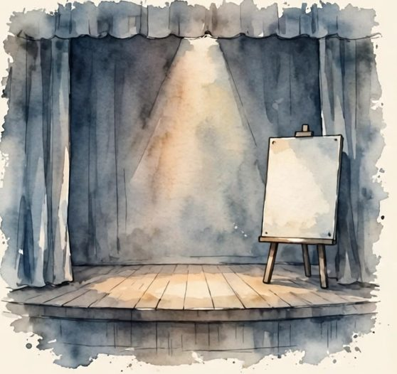
A theatre poster with one famous name in letters larger than the title.
Fame is the label that eats the others. Whatever else a person has been — student, parent, craftsman, friend — the famous thing, once the world has noticed it, is promoted to the whole introduction, the single line in the register written in letters too large for the column. Famous for one thing: the song, the goal, the scandal, the invention, the face in the advertisement. The rest of the coatroom stays exactly as it was, hooks and all. But the corridor outside now admits only the one coat, worn in all weathers, presented at every door, until its owner can no longer remember a room that asked about anything else.
The house has studied the condition with sympathy, because fame in this respect is only the public version of a private fate. Everyone is famous for one thing somewhere: in the family (the one who left, the one who failed, the one who can be relied on absolutely), in the office, in the village of one's origins. A single story, told well and often, becomes the door through which all visitors must enter, and the person receives them, year after year, standing in that doorway in the same coat, smiling with slowly decreasing conviction. To be known for one thing is still to be unknown, with better lighting.
The remedy is not obscurity — the genie declines to re-enter bottles, and the house does not deal in spells. It is proportion, practiced privately: keeping the other hooks in use. The famous thing hangs in the hall where it belongs, admired, insured, and left there while its owner goes in to dinner as the person who also gardens badly, laughs at the wrong lines, and is learning, at his age, the names of trees. One true thing about you, however golden, is still one thing. The register's full page, in its many hands and inks, remains the truer portrait — and the keeper, who files by faces, has never once mistaken the poster for the guest.
33The Former Everything
There comes a season when the introductions all begin with the same word. Former director, former champion, former minister, former husband of, formerly of this parish. Former is the register's most melancholy prefix: a label that defines its wearer entirely by a checked-out coat. The past titles were real — the hooks are still warm, in a manner of speaking — and the world, which files slowly, goes on presenting the man by his vacancies because it has not yet learned his present. It is like being addressed, permanently, by the name of a house you have moved out of, by neighbours who never saw the new one.
Yet former has a dignity the house is careful to honour, because it is the tax on having been something. Only the person who held the office can be its former holder; the prefix is a pension paid in grammar by a world that does not forget real service quickly. The mistake is only ever residential. To live in the former — to introduce oneself by it, polish it, correct strangers toward it — is to take up lodging in the coatroom itself, among the hanging coats, refusing the rooms beyond. The keeper sees it and grieves quietly. The hooks are for coats. The chairs, the windows, the gardens are for guests, and guests are defined by their arrival, not their storage.
So let former be a tense and not, heaven help us, a title. It belongs in the biography, in the obituary, in the fond toast — all places where the past tense is the correct instrument. The present tense has its own introductions, plainer and better: a man, at his garden; a woman, at her studies; a person, underway. The register writes them without prefix, in fresh ink, because the keeper's whole profession rests on this conviction: a guest is not the sum of the coats he has returned. He is the one who walked in today, and today's entry, unwritten yet by any office, already outranks the entire melancholy row.
34Work Is a Verb
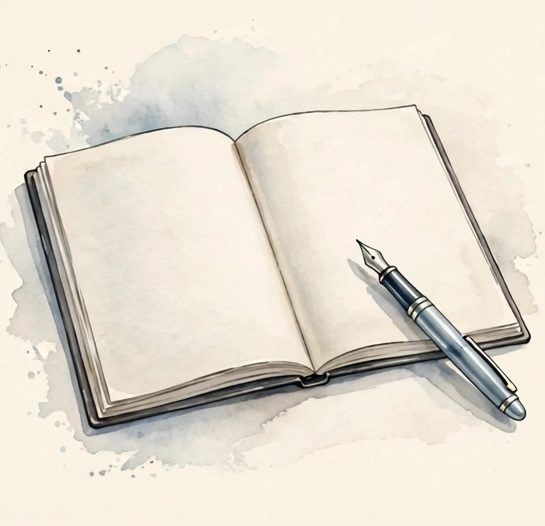
A workbench at dawn, tools laid out, nothing yet made and everything possible.
Amid all the hall's nouns — title, rank, trade, position — the house keeps one small room for a grammatical protest. Work is a verb. It declines to sit still in the register among the labels because it is not a thing a person is; it is a thing a person does, morning by morning, and stops doing at night without ceasing to exist. We say I am a builder as if the being and the building were one substance, but the language is lazier than the truth. Sleep disproves it nightly. The builder dreams, entirely unbuilt dreams, and wakes still himself — the doer temporarily without the deed, which is the human condition exactly.
The protest matters because verbs forgive and nouns don't. A verb can change its tense: I built, I build, I will build otherwise — the same subject throughout, unembarrassed by the conjugations. A noun must be defended as-is, or surrendered in a scene. People cling to the noun of their work long after the verb has left the building, introducing themselves by a title whose work they have not touched in years, because the noun feels like the identity and the verb feels like mere activity. Reverse the valuation and a whole life loosens. The verb was the living part all along. The noun was its coat, hung up nightly even by those who believed they slept in it.
Practice the grammar once a day, then, in the privacy of your own register. Not what am I, but what am I doing — today, with these hands, in this light. The answers will be smaller than the title and truer than the card: mending, learning, carrying, clearing, beginning again. Under the doing stands the doer, unconjugated, whom no tense can finish. The house's halls are full of nouns, handsomely lettered, and it respects them all. But its keeper keeps his own counsel in the old way. He watches what a guest does with an ordinary hour, and files the person, always, under the verb.
35When the Title Leaves First
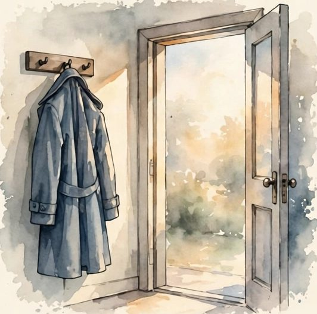
A coat taken from its hook by another hand, the office beyond already rearranged.
Sometimes the title does not wait for the person to leave. It goes first — in the reorganization, the lost election, the letter that thanks you for your service in the opening line. There is a particular vertigo in it, well known to the suddenly former: the coat is reclaimed while you are still, as it were, standing in the room, and for a day or a year the corridor seems to have no name for you at all. Colleagues practise not seeing you in the new arrangement. The building itself, that great filing system, has closed your drawer. It feels, from inside, remarkably like being mislaid by the coatroom altogether.
The keeper has a word for this feeling, and the word is: inaccurate. The title left first because titles are the most detachable part of any arrangement — designed, if we are honest, to be reissued; the desk was always going to be re-lettered, the chair re-filled, the function re-described in a younger hand. What has not left is everything the title was borrowed against: the competence in the hands, the judgment seasoned by the actual years, the person who did the work the title merely advertised. The vertigo comes from having stored the self in the most portable item. It is a storage error, correctable, though the correction is rarely done in a day.
The house therefore keeps this room unthreatening and well lit. Sit down. Have the coat that remains — the private one, with your own things in the pockets — brought round by the keeper, who never confuses a reorganization with a disappearance. Titles leave first because they were always the outermost layer, the way frost leaves before the ground thaws. What thaws after is slower and more important. People emerge from lost titles the way they emerge from long winters: simplified, a little shy of the light, and presently astonished at how much of them was never the office at all.
36Introduced Without a Title
The hall of titles ends, by design, with an experiment. Imagine being introduced with nothing in the introduction: no title, no trade, no former, no famous-for — only the name, and then a silence in which the company must discover the person unaided. It is an alarming prospect for the labelled, which is to say for everyone. Without the coat, what will they make of us? The question assumes they were making something of the coat all along, and that the coat's testimony was the real introduction. The experiment's result, whenever life runs it — at the retreat, the new city, the hospital ward where all gowns are equal — is strangely consistent.
Stripped of the lettering, people do not become invisible. They become legible in the older script: kindness read directly off the manner, intelligence off the questions, humour off the timing, the whole person arriving without his documentation and being, to everyone's mild surprise, perfectly readable. The titles were never the message. They were the envelope — useful for delivery, discarded on opening, and mourned by no recipient who has read the letter. This hall has catalogued envelopes for twenty-four rooms. It ends by suggesting that the letter was openable all along, and that most of your correspondents, given the chance, preferred reading to filing.
So the introduction without a title is not a humiliation to be avoided but a skill to be kept in repair: the ability to enter a room as the guest rather than as the register entry, and let the evening find out what it needs. The keeper practises it on everyone impartially — he greets archbishops and apprentices with the same plain courtesy, and both, after a moment's adjustment, seem to breathe easier. A title can open a door. Only a person can be welcome through it. Arrive, then, as the one who can be welcomed. The lettering will catch up with you soon enough; it always does.
37The Good One
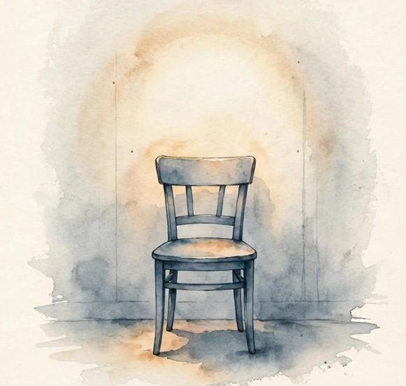
Two children on a wall, one pointing at the other, mid-verdict.
The hall of praise and blame opens with the smallest courtroom in the world: two children, one wall, and the verdict already delivered — he's the good one. Families are the first ministries of reputation, and their appointments are for life. One child is issued goodness like a school uniform: to be worn daily, kept clean, and grown out of at his peril. The label looks like a blessing, and in the register's early pages it is written in the warmest ink in the house. Only its wearer learns the terms. The good one is not praised for being; he is licensed for behaving, and the license is renewed act by act, smile by smile, report card by report card.
For goodness as a label is a contract, not a description. It requires the good one to forgo the ordinary human inventory — temper, selfishness, the occasional magnificent refusal — or to conduct them all in secret, which is worse. Meanwhile the court's other appointees watch and learn the system's secret: the verdicts were never really about conduct. They are casting. The family play needs a good one the way it needs a clown and a worrier, and it will re-audition the cast only under extreme pressure. Many a good one has reached forty still performing a part written for a seven-year-old, in a coat that fits nowhere but the shoulders of memory.
The house does not overturn the childhood court; it merely notes, for the grown defendant, that its jurisdiction was smaller than advertised. Being good is a practice, available afresh each day, to anyone. Being the good one is a label, awarded once, and it can be returned to the coatroom with the other early coats — with thanks for the warmth it gave and no apology for its retirement. What remains, when the title is hung up, is not wickedness. It is freedom of movement: the right to be kind by choice rather than by casting. The verdict was always too small for the person. The person, it turns out, is allowed to be good on purpose.
38The Difficult One
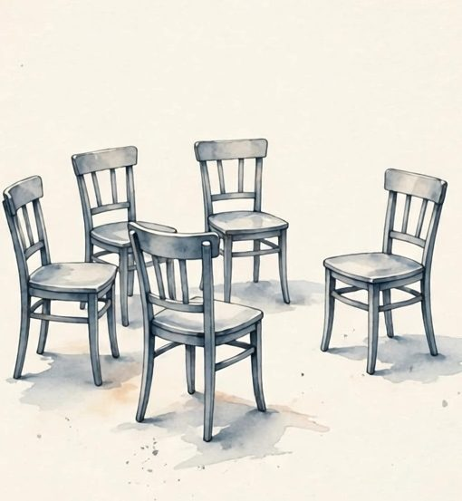
A doorstep in evening shadow, a figure expected and already forgiven.
Every court that appoints a good one appoints, in the same sitting and usually the same afternoon, a difficult one. The title is delivered early and with the confidence of prophecy: she was always the handful, he was the one they'd have the trouble with. The house has examined many such files and reports a pattern the families never notice. The difficult one is frequently the child who said the true thing at the wrong moment, or asked the question the parlour had agreed to skip — difficulty being the family's word for any member whose coat never quite matched the weather indoors.
The label then does what labels do: it edits the evidence. The difficult one's kindnesses are filed as exceptions, his generosities as strategies, his entirely ordinary bad days as confirmations. A reputation, once issued, employs its own clerks. Meanwhile the person inside the verdict grows up conducting a permanent appeal that no court has agreed to hear, or — the commoner tragedy — stops appealing and wears the coat as ordered, playing the difficult one at every reunion with professional thoroughness. The coatroom keeps these coats in a row of their own, and they are, the keeper notes, among the most carefully maintained in the building. Nothing is polished like a grievance.
Redemption, when it comes, rarely arrives as a verdict reversed. It comes as a smaller, better thing: one person, usually late in the story, who simply files the difficult one under a different word — honest, say, or tired, or right — and treats him accordingly until the treatment takes. The house calls this the coatroom's true sacrament: relabelling by hand, in person, at close range. Courts issue labels in bulk. Mercy issues them one at a time. The difficult one was never a kind of person. He was a kind of hearing — other people's — and hearings, unlike people, can improve overnight.
39Reputation: A Label Other People Keep
Of all your labels, reputation is the only one you neither wear nor keep. It is stored off the premises, in other people's registers — a copy of your file maintained by clerks you have never met, in handwriting you cannot supervise. You may be meticulous with your own coat and find the archive copy annotated with weather from decades ago: the rumour, the resemblance, the one afternoon in 1994 that three witnesses still narrate better than you lived it. The house finds this arrangement outrageous and completely normal. A person has a life. A reputation has a circulation. The two meet only occasionally, at parties, where they are politely introduced and find they have little to say to each other.
This distance explains reputation's strange physics. It lags years behind the person, then leaps ahead of him into rooms he has not entered, arriving breathless with news he has not made. It can be ruined by clerks and restored by clerks, inherited by children, and traded — whole firms are bought for it — like a coat whose wearer is a rumour to the buyers. Tending it is real work and the house does not sneer at the work; doors open for good files, and the keeper's own register is a kind of reputation honestly kept. The error is only residential again: moving into the file. People who live in their reputations start performing for the archive, and the archive, being other people's, is a theatre with the audience facing the wrong way.
Keep your own register, then, and let the others keep theirs. Yours fits in a drawer and is kept in one hand: what you did, what it cost, what you would do again. Theirs will be corrected slowly, in their own time, by the accumulated weather of your actual conduct — or not corrected, which history survives daily. A reputation is a label other people keep. Let them keep it; keeping is their hobby, not your lease. The person the file describes in its various inks is meanwhile at liberty in all the rooms the file has never seen, unrevised and entire, being better and worse than reported, as people are.
40The Label That Was True Once
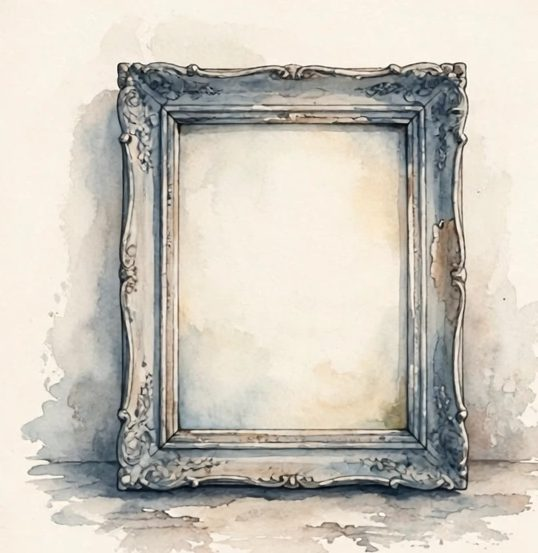
An old photograph above the register, the face in it certain of everything.
The subtlest labels in the hall are not the false ones. Falsehood is easy to appeal. The dangerous ones are the labels that were true once — the champion at nineteen, the radical at twenty-five, the grieving one, the rising one, the one who would never. Each was an accurate register entry in its season, witnessed, earned, correctly filed. Then the season turned, as seasons are employed to do, and the person changed in the undramatic way of people who are busy living. The label, having truth in its pedigree, refused all amendments. It stands in the coatroom still, technically correct, like a map of a coastline the sea has since revised.
We keep these labels ourselves, mostly; other people are too busy to maintain them. The once-true label becomes a standard the present self is measured against and found, daily, to be an impostor beside — though the arithmetic is rigged, since the photograph was taken at the one hour the light was perfect. The house has a gentle ruling on all such comparisons. The nineteen-year-old champion was real, and so is the person reading the file, and neither is the other's superior officer. A life is not a court where the early volumes outrank the later ones. It is one register, many hands, and the latest entries are written by the only clerk currently on duty.
So file the once-true labels with honour and close the drawer. They are history, and history in this house is kept beautifully — and kept. The living labels, the ones still in service, should be audited for a simpler property than truth: fit, today, in this weather. A coat that fitted truly in another decade is still a coat that does not fit. Hang it among the honoured garments, visit it with affection, tell its story to the grandchildren. Then walk out in the present tense, which requires no justification from any earlier page. The truest label you ever wore has had its season. The person it described is having his.
41Praised Into a Corner
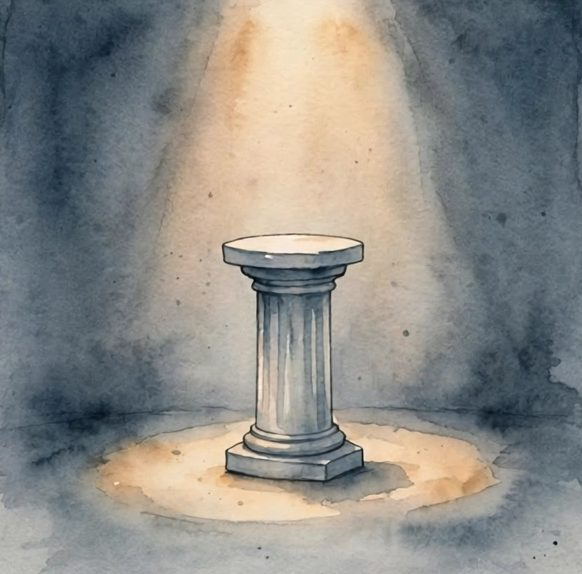
A wreath hung on the hook, and the coat beneath it standing very still.
Praise is a kind garment, and like all garments it can be cut too tight. The house has watched it happen: a person does one generous thing, or one brave thing, or one excellent thing, and the room applauds so warmly that the coat is hung on the highest hook in the coatroom, where everyone can point to it. After that, the person is expected to live at that height. The applause was meant as thanks. It lands, slowly, as an assignment — and assignments, unlike thanks, are never finished being owed.
The corner is a real place. It is where the praised person stands when an ordinary Tuesday arrives and they would like to be tired, or wrong, or merely average, and the room looks up at the high hook and waits. To step down feels like disappointing the wreath. So the coat stays buttoned, the shoulders stay straight, and the person inside the garment grows quieter and quieter, the way a voice does in a room where only one note is ever requested. Nobody warns the cornered person that this has happened; the room believes it is still applauding, and applause, from inside the corner, sounds remarkably like instructions.
The keeper has a remedy, and it is not to refuse praise — praise honestly given is bread, and the house does not refuse bread. The remedy is to receive the wreath the way one receives a coat: with thanks, and then hung up at the end of the evening like everything else in the register. What was praised was a deed, and deeds belong to days. The house has kept garlands for a century, and not one of them has ever needed the guest to keep standing under it. Hang the garland on the hook, let the corner empty, and walk home at whatever height the evening actually requires.
42The Rumor and the Record
Every life keeps two books, though only one of them is written by the person living it. The record is the plain account: what was done, what was said, what can be checked against a date and a witness. The rumor is the other book, compiled in corridors by people who were elsewhere at the time, and it is always the livelier read. Rumors have better plots. They travel faster, dress better, and never once stop at the desk to ask whether the coat they describe belongs to anyone in the building.
The trouble is not that rumors exist — the house is old, and it has heard weather of every kind against its windows. The trouble is when a person begins to wear the rumor as if it were their own coat, adjusting their walk to a garment sewn by strangers from secondhand cloth. It never fits. It pulls at the shoulders in company and hangs loose in private, and after a while the wearer can no longer remember which measurements were ever truly theirs. It is a strange apprenticeship, learning to dress for an audience of narrators who have never once been in the room where the life is actually lived.
The keeper's practice is simple, and it is written in the front of the register: when the two books disagree, consult the record, and let the rumor keep its own company. A rumor cannot be argued out of existence; it can only be outlived, the way a season is outlived, by someone who keeps showing up in their actual size. The record is quieter, and it is enough. The keeper enters what happened, dates it, and lets the margins fill as they will; margins have never yet been mistaken, by anyone careful, for the text they surround. Paper that tells the truth does not need to shout.
43When They Call You Strong
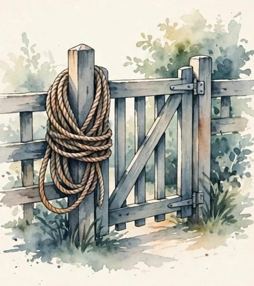
A heavy coat praised for its weight, shoulders and all.
It is said as a compliment, and often it is meant as one: you are strong. People say it at hospital doors and gravesides and kitchen tables where the bills have been opened, and there is real admiration in it. But the keeper has noticed what the word quietly does. A coat labeled strong is a coat that no one offers to help carry. The compliment arrives, and behind it, politely, the offers of assistance leave the room, because strength — the room has decided — does not need anything.
So the strong one learns the choreography. They hold the door, they make the calls, they are composed in the photograph. Inside the coat, matters may be entirely otherwise: grief doing its slow work, fear keeping its own hours, a plain human tiredness that has nowhere to set itself down. The label does not forbid rest, exactly. It simply never thinks to offer it, and after enough years the person stops thinking to ask — which is the label's finest trick, and its cruelest. The strongest-looking coat in the coatroom, the keeper will tell you, is very often the one whose owner has simply had the longest practice at not setting it down.
Hang the word up with the rest. Strength, where it exists, is a weather that passes through a person, not the person's climate; it visits the trembling and the tired as faithfully as it visits anyone. You are allowed to be the one who is carried, some evenings, without filing an amendment to your reputation. The coatroom does not grade its coats. The word can be received the way weather is received — noted, respected, even admired — without being mistaken for the climate of the house it happens to be passing through. It keeps them all, the sturdy and the threadbare alike, until their owners come back down the hall.
44The Label You'd Never Choose
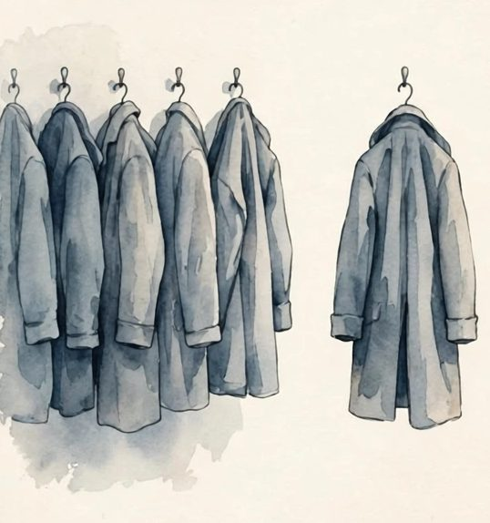
A stranger's handwriting on the tag, in ink that will not wash.
Some labels a person sews on themselves, and some are pinned on by other hands, in other rooms, for reasons that had very little to do with the person wearing them. The difficult one. The disappointment. The one who peaked early, the one who never amounted, the black sheep, the cautionary tale told at other people's tables. Nobody applies for these. They arrive the way weather arrives, through no decision of yours, and then they are treated — by everyone, eventually including you — as if they were a climate you chose.
The house keeps a particular tenderness for this hook in the coatroom, because the garment on it is the one most often mistaken for its owner. Others hung it there. Others point to it when your name comes up, the way visitors point to a portrait of someone they never met. And the longer a label hangs unchallenged in a public place, the more it acquires the false authority of furniture — as if it had always been there, as if the wall had been built around it. A wall, after all, cannot argue with what is hung on it, and neither, for a long while, can the person standing nearest to it.
But a label pinned on by strangers is still only pinned. It is not stitched into the skin, and it is not entered in the register in the keeper's hand. You are permitted — the house insists on this — to read the tag aloud, consider its handwriting, and decline the garment entirely. What other people needed to call you was a fact about their filing system. Others may go on consulting the tag when your name is mentioned; that is their errand, conducted in their hall. Yours is the older and simpler one of wearing your own measurements. It was never a fact about you.
45Blame, Worn Like a Coat
Blame is the heaviest garment in the coatroom, and the strangest thing about it is how willingly it is worn. Groups are relieved to hand it over — a family, an office, a whole unhappy era can agree, without ever quite saying so, that one coat will carry the fault for everyone. It simplifies the bookkeeping beautifully. Instead of a hundred small entries of shared failure, there is one large name in the ledger, and everyone else's page stays clean enough to sleep on. The garment is handed over at funerals, at reckonings, at the ends of enterprises, and it is always described the same way: as simply the truth about what happened.
The wearer, meanwhile, begins to stoop. A person blamed long enough starts apologizing for the weather, for other people's silences, for outcomes decided in rooms they were never in. The coat grows into the posture. This is the part the house wishes someone would say at the beginning, in a clear voice: carrying everyone's fault is not humility, and it is not love. It is a clerical error that has been allowed to stand for so long that it is quoted as history. Ask the stooping tenant, some quiet evening, which parts of the coat they actually remember choosing, and the answer — after a long pause — is usually none of them.
The remedy is a quiet audit at the desk. What, exactly, is yours? That part — carry it honestly; the house respects a person who owns their true share and pays it. The rest, set down. Not thrown at anyone, not redistributed with interest, simply unshouldered, the way a traveler sets down a bag that was loaded onto the wrong cart. A coat of blame fits no one. What is set down stays set down; the desk does not chase it, and neither, in the keeper's long observation, does the conscience of the person who finally put down only what was never theirs. It was only ever being stored on you.
The Coatroom Desk
One desk receives all correspondence for this house — questions, corrections, greetings, and labels you are thinking of retiring. It is read in the order it arrives.
46A Clean Record Is Also a Label
A spotless coat on the hook, never once taken out in the rain.
It sounds like the opposite of a problem: a clean record, an unblemished name, nothing in the ledger to explain. The house keeps such coats and handles them carefully, because it knows their secret. A spotless reputation is still a reputation — still a garment cut by other people's expectations — and it can bind as tightly as any disgrace. The person inside it must stay spotless. Every new year is another inspection, and the coat must come through it without a mark, or the whole wardrobe was a lie.
So the clean record produces its own quiet evasions. Risks are declined before they are considered. Apologies are rehearsed out of existence, since an apology implies a stain. Life narrows itself politely, the way a careful guest narrows their movements in a house full of pale carpets. Nobody scolds the wearer; the room admires the coat extravagantly. But admiration, the keeper notes, is not the same as room to breathe, and a garment that cannot survive a muddy road will eventually forbid the road. The saddest exhibit in this part of the coatroom is not a ruined coat but a perfect one, behind whose glass its owner spent a lifetime declining the weather.
Hang it up, then — not in shame, but in relief. A record exists to remember what happened, not to dictate what may happen next. The occasional honest smudge, owned and entered plainly, harms no one worth keeping; it merely proves the coat has been outdoors, in actual weather, on an actual person. The register is kinder than the showcase. The tenant who has never been rained on has also, the register quietly notes, never been anywhere the rain was falling — and rain, whatever the showcase says, is where a good part of every real life is scheduled to happen. It was made for lives, not for displays.
47Let the Ledger Speak Quietly
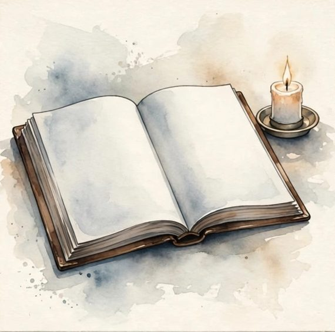
The register open on the desk, saying less than the room expected.
Sooner or later, in most lives, there comes an urge to make a speech — to stand in the middle of the room and correct the record aloud, entry by entry, until every listener files out with the right version. The house understands the urge. It has heard such speeches through its walls for years, and it offers one observation, gently: the people who needed to hear them rarely stay, and the people who stay rarely needed to. Vindication delivered by podium has a short shelf life and a long echo of exhaustion.
There is another way, and the coatroom practices it nightly. The ledger does not argue. It simply records, accurately, in a steady hand, what was actually done and said and carried — and then it remains available, open on the desk, for anyone who ever genuinely wants to know. Most never come. A few do, usually late, usually quietly, and those are precisely the ones worth having read it. Truth does not require an audience. It requires only an accurate page and time. This is not indifference dressed as patience. The ledger cares about the truth more than the speech does; it simply trusts ink and time more than volume.
So let the ledger speak quietly, and spend your voice on warmer things. Live at the speed of the record rather than the rumor, answer direct questions directly, and let the rest lie in its ink. The house is not indifferent to your name; it is confident about it. A name kept accurately does not need defending every season. Years from now, the speeches will be forgotten by everyone who heard them, including the speaker, and the page will still be there, legible, saying exactly what it said — which is all that accuracy ever promised anyone. It needs only to be left where honest eyes can find it.
48Neither Saint nor Warning
The room, when it sums a person up, reaches for one of two large frames. In the first, the saint: the life retold as an example, all edges planed smooth, every hardship converted into a lesson for the edification of strangers. In the second, the warning: the same life retold as a caution, the mistakes promoted to headlines and the rest dismissed as footnotes. Both portraits hang in public halls. Both are impressive. And neither one, the keeper notes, can be sat in, eaten in, or lived in past Tuesday.
What gets lost between the frames is the ordinary scale at which a life is actually conducted. The saint also burned the soup and envied a friend and once lied about something small and stupid. The warning also paid debts nobody saw, kept a plant alive through a hard winter, and was kind in traffic. Praise and blame, given the whole canvas, both become cartoons — flattering in one case, damning in the other, and equally unfit to hang a coat on. A life viewed entire, at ordinary scale, is mostly errands and weather and small unrecorded mercies, and any portrait that leaves those out has left out the tenancy itself.
The house proposes the chair between the portraits. It is not a throne and it is not a pillory; it is a plain seat at a plain height, from which a person may be exactly as mixed as people are. Refuse both frames when they are offered — the gilded one as firmly as the black one. A life is not an example or an alarm. The chair does not flatter and it does not accuse, which is precisely its recommendation. From it, a person can finally be looked at the way the keeper looks: whole, and at eye level. It is a tenancy, and you are the one living in it.
49Older Than, Younger Than
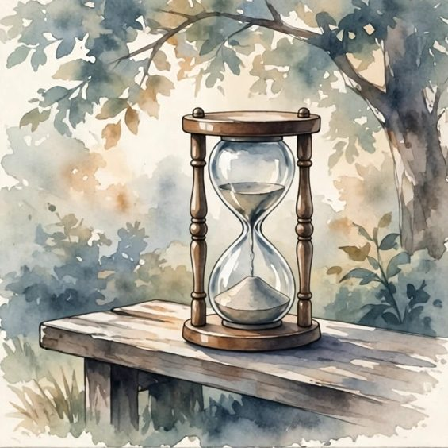
Two coats compared on their hooks, both the worse for the measuring.
Notice how rarely an age is allowed to be a number. It arrives, almost always, dragging a comparison behind it: older than the others at the table, younger than the person whose chair you want, ahead of the schedule or behind it. The house has listened to these comparisons for a century and reports that they have never once produced information. Older than whom, for what, by whose calendar? The arithmetic is precise and the meaning is fog. Yet whole afternoons of a life are spent standing between two other hooks, being measured.
The comparisons do their real damage in the wardrobe of the mind. A person ahead of the supposed schedule begins to wear their years like a medal they must keep deserving; a person behind wears theirs like an apology they must keep making. Both are dressed by a timetable nobody signed. Meanwhile the actual year — this one, the one with weather in it — goes unworn, unexamined, unlived in, because all attention is on the relative position of a number. The register has a column for the year a tenancy began and none at all for whether it began at the fashionable moment, there being no such moment in any record the house respects.
The keeper enters ages in the register without adjectives. A year is a measure of how long the light has been falling on a particular life, nothing more mystical and nothing less. Set the comparisons down with the other borrowed garments. You are not early and you are not late; you are resident. Other tenants arrived earlier and will stay later, or the reverse, and the house lights their windows with the same indifference it lights yours. The light was never the competition. The house does not consult its other tenants about your tenancy, and their calendars, however confidently printed, have no jurisdiction here.
50The Age on the Form
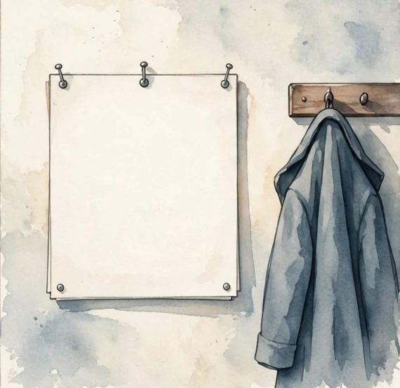
A small square box on the paper, and a whole life asked to fit in it.
Every form begins with it, sooner or later: the little printed box that wants your age, or the date from which your age can be computed. The box is not curious about anything else — not what the years contained, not what they cost, not what they taught. It wants a number it can file, and the number, once filed, will be treated as a summary of the applicant. In this the form is like the world in miniature: endlessly supplied with your data, and almost entirely uninformed about you.
There is no use resenting the box. Paper has its errands, and this is one of them; the keeper fills in forms too, in the same square handwriting. The error begins only when the person completing the form starts believing the box — when the number on the line begins to answer questions it was never asked, about what is still possible, still permitted, still becoming. A date of birth is a fact. Everything the room concludes from it is a costume the room has sewn. A date can be certified, stamped, and embossed; the conclusions drawn from it at the desk are unlicensed work, and the house declines to insure them.
So write the number, cleanly, and walk on. It describes the length of the road behind you with tolerable accuracy and says nothing whatsoever about the road ahead, which has not yet filed its paperwork. The register holds your dates among a thousand others, all of them equally partial. Some of the register's longest tenancies began, by the box's arithmetic, absurdly late, and some of its briefest were complete in a handful of years. The box counted both accurately, and understood neither. What the form calls your age, the house calls your attendance so far — and attendance, however long, is not a verdict on the lesson.
51A Diagnosis Is Information, Not a Name
A diagnosis, properly given, is a serious and useful thing: careful information, gathered by people trained to gather it, meant to guide real decisions about real treatment. The house does not make light of it, and neither should anyone. A name for what ails the body or the mind can open doors — to medicine, to help, to the mercy of understanding what one is dealing with. Information of that kind deserves a clean page in the register and the respect due to anything that steers a person toward care.
But information is not a name, and a file is not a person. The trouble begins when the word from the letter escapes the letter — when it is pinned to the coat and worn into every room, so that introductions are made through it, expectations are set by it, and the whole crowded remainder of a life is asked to queue behind one entry. A diagnosis describes a condition a person has. It does not describe what the person loves, notices, builds, forgives, or finds funny at breakfast, and it was never designed to.
So let the letter do its work at the desk, with the professionals whose work it is, and follow their guidance as the serious information it is. Then close the file, and come back into the hall as the whole tenancy — of which the condition is one room, sometimes a difficult one, but never the address of the house. You are more than anything that can be written about you. That is not a comfort invented for hard days. The file stays in the cabinet, where files belong, consulted when needed and closed when not. It is simply the arithmetic of a person.
52The Body Keeps Its Own Register
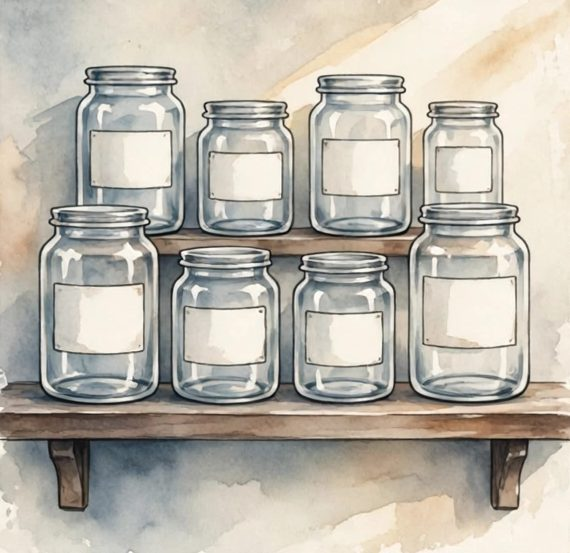
A ledger no visitor may read, kept in a hand older than ink.
Long before any clerk wrote your name in a book, another record was already being kept. The body is the house's first registrar: it notes the winters, the lifting, the long vigils and the short ones, the meals skipped and the meals remembered. Its entries are not made in ink but in the shoulder that predicts rain, the knee with opinions, the scar that has become local geography. This register is complete in a way no paper archive manages, and it is entirely unimpressed by what the paper says. No visitor is ever shown it, and no committee approves its entries.
The two records frequently disagree, and the disagreement is instructive. The form says one age; the body's ledger describes a life lived at a particular intensity, which is a different measurement altogether. Other people's labels say strong, or frail, or finished; the body's own book records, in its private notation, what was carried and what it cost and what quietly healed. The house trusts the older registrar. It has never once filed an entry to impress a visitor. It is the only biography of the tenant that was written by a witness present at every scene, and it shows a marked indifference to how the scenes played with the audience.
There is a courtesy in this worth learning: the body's register is not published. It is kept for the tenant's own use — a true account, available at any hour, of what this life has actually been. Read it without shame and without boasting, the way the keeper reads the house book. It will tell you where you have been. Younger tenants often ignore the old registrar until it insists on being read, usually at an inconvenient hour. Older ones consult it the way sailors consult a familiar chart — without panic, and with respect for what it has been right about. It makes no claim at all about where you must stop.
53Tall, Short, and Other Directions
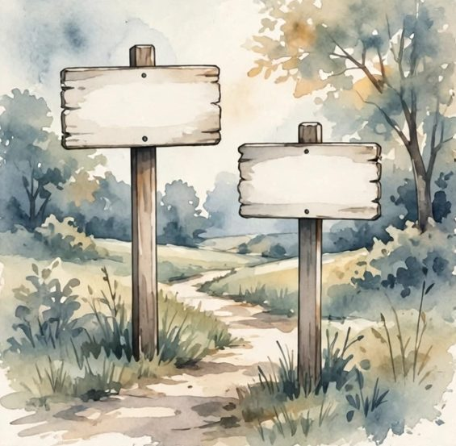
Coats of every length on the rail, none of them nearer the sky in worth.
Of all the labels in the coatroom, the body's dimensions may be the most absurdly confident. Tall, short, large, small — directions and extents, geometry at its plainest — and yet each is delivered, from childhood onward, as if it were a character reference. The tall one is handed things to reach and expectations to match; the short one is handed step stools and a lifetime of other people's jokes filed under affection. Neither was consulted. Both are dressed, daily, in conclusions drawn from a tape measure. Playgrounds administer the first readings, and they are not known for the subtlety of their criticism.
The house, which contains doors of several heights and chairs of several opinions, finds the whole proceeding quaint. A direction is not a destiny. Height describes where a person's head is located in a crowd; it reports nothing about what the head contains, what the hands can do, or what the heart has carried up the stairs. The register records measurements in their proper column, among the widths of doorways and the lengths of curtains, where measurements belong. What the tape cannot register is the use a tenant makes of their altitude — the tall one who stoops kindly toward every conversation, the short one whose presence fills doorways the tape has never heard of.
Stand at whatever altitude you were issued and let the adjectives fall where they may. The coatroom rail holds every length without ranking them, and the keeper has never yet directed a visitor to the tall hooks for wisdom or the short ones for humility. You are not a direction. The register's final word on measurement is that it belongs to tailors and carpenters, professions the house honors, neither of which has ever claimed to be measuring a soul. You are the one traveling — and the road, which is the honest party in this arrangement, has never asked how high you stand above it.
54The Face in the Photograph
Every house has one: the photograph that arrives before the person does. It may be an actual picture, fixed in a frame by the door, or the mental portrait the room has developed from old exposures — the face as it was at twenty, or in the famous year, or on the worst afternoon, developed once and then used as the reference print for all subsequent meetings. The photograph is not false, exactly. It is simply finished, and the person, inconveniently, is not. Visitors study it before knocking, the way readers study a cover, and arrive at the door with their conclusions already buttoned.
The mismatch produces a particular social weather. The room greets the photograph and is faintly startled by the person; compliments are paid to the print — you haven't changed — that land on the living face as small erasures. To be told you are unchanged by people who knew you decades ago is to learn that their copy of you stopped developing long ago. The coat they remember hangs in their hall, well kept and entirely vacant, while you stand in the doorway wearing the present tense. To be frozen at any age, in other people's keeping, is to be filed under a date — and dates, in this house, are where records start, not where people end.
Keep your own print current, at least in your own keeping. The house does not ask the face in the photograph to apologize for existing; it was true once, and truth keeps a certain tenure. But the tenancy has moved on, and the current face — lined by its years, lit by its mornings — is not a decline from the portrait. It is the sequel. Let visitors consult their old exposures if they must. The tenant's own mirror, kept current and consulted kindly, is the only frame the house recommends. It shows the face the life is currently being lived in, which is the only one available for the work. You live in the later edition.
55Strong Is a Season
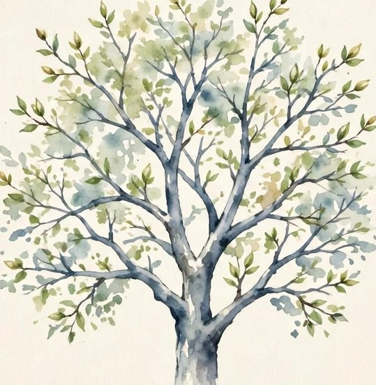
A summer coat and a winter coat, and the rail that honors both.
The body, like the year, has its seasons, and it keeps them without asking permission from the register. There are springs in a life when strength arrives unbidden — the lifting is easy, the stairs are short, recovery comes overnight like a considerate guest. And there are winters, sometimes long ones, when the same stairs file formal complaints and the simplest errand requires negotiations. The room, watching either season, makes the same error in both directions: it declares the season a character. In spring you are strong. In winter you are failing. The house records only that the weather changed.
Neither verdict survives contact with the calendar. The spring strength was partly season — sleep, health, luck, the brief alignment of a hundred small systems — and the winter weakness is partly season too, and no more a confession of worth than January is a confession by the garden. Tenants who hang their identity on the summer coat spend the winter in hiding, ashamed of a climate. Tenants who mistake the winter coat for themselves stop watching for spring, which is the only real loss winter can inflict. The garden does not apologize for February, and it does not sign contracts in June.
The keeper's rail makes no such mistakes; it holds all the coats at once and rates none of them as the tenant. Be in the season you are in, fully and without apology, and keep the other coats brushed and ready. Strength will visit again in its turn, and weakness will visit too, and neither visit is the biography. Tenants who learn this early spare themselves the winter's worst weather, which is not the cold. It is the belief, absorbed from the room's gasp at the window, that the cold is a verdict on the house. You are the house the seasons pass through — not the weather at the door.
56The Label Worn on the Body
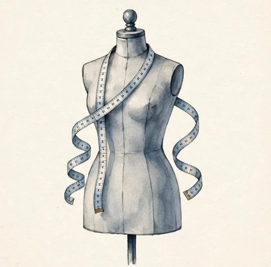
A coat tailored by strangers, fitted in public, worn in private.
Some labels are not hung in any coatroom; they are read directly off the body, by strangers, at a glance, before a word has been exchanged. The room believes it can see a biography in a silhouette — health, habits, discipline, worth — and delivers its reading with the confidence of long practice. It is worth saying plainly what the keeper says: the glance is fast, and it is frequently wrong, and even when it guesses a fact correctly it has still learned nothing about the person. A body is a residence, not a résumé.
The wearer of such readings learns to feel observed in the most ordinary transactions — the meal chosen, the chair taken, the photograph consented to or avoided. The label worn on the body cannot be checked at the door; that is its particular cruelty. It follows the tenant into every room, announcing itself ahead of introductions, and it takes a steady, long practice to remember that the announcement was composed by the announcers. Their reading is their document. It was never your file. A glance takes a second and can occupy a tenant for a decade, which is a poor exchange rate by any ledger the house keeps, and worth refusing on arithmetic alone.
The house proposes the old remedy, which is a form of good posture: not the straightened spine of someone performing confidence, but the settled bearing of a tenant who knows which documents are theirs. You are answerable for your conduct, your kindness, your word. You are not answerable for a stranger's glance or the essay it wrote on the way across the room. Let the glances keep their notes. Glances will keep arriving; they are the room's weather, and weather is not correspondence. The tenant who learns to let them pass unopened has recovered whole evenings that used to be spent on other people's mail. Your register is kept elsewhere, and it is kept accurately.
57Scar Tissue Is Not a Summary
A scar is evidence, and evidence is a limited genre. It testifies that something happened here — a cut, a burn, a surgery, a season of the body's history — and it testifies to nothing else: not to how it was borne, not to what it meant, not to who the person was before or has become since. Yet scars attract summary the way ledgers attract auditors. Strangers read them as conclusions, and even friends, kindly meaning it, sometimes treat the marked place as the headline of the whole text, when it is only a footnote in a long chapter.
The house has mended many garments and keeps its own philosophy of the seam. A repair does not diminish a coat; often it records the exact place where care was taken, where someone — the tenant, a surgeon, time itself — did the patient work of closing what was open. Scar tissue is, literally, the body's handwriting for I continued. To read it as damage alone is to misread the only sentence it actually contains. The mending is not the shame of the garment. It is among its credentials. A closed seam is, among other things, a kept appointment with the future.
So let the marks keep their modest testimony and decline the larger office. You are not required to narrate them, explain them, or arrange your life as their exhibition. Where the tissue speaks, it says one true thing: this happened, and the tenant remained. The keeper, who mends what the house's guests tear, keeps no display case of famous repairs. The mended coats go back on the rail among the others, where they belong — distinguishable, on close inspection, only by the evidence that somebody cared enough to sew. Everything after that sentence is the rest of the story, which is longer, funnier, and considerably more yours than any summary a mark could offer.
58How You Look Is a Weather Report
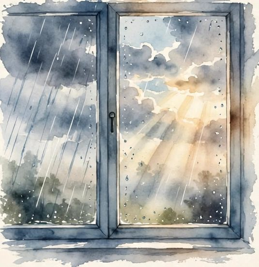
Morning light on the coatroom window, different every day by nine.
A weather report is a useful, honest, and strictly temporary document. It describes conditions at an hour — pressure, light, the likelihood of rain — and no sensible person treats it as the climate, let alone as the country. How a person looks works the same way, though the room rarely grants it the same humility. A face in the morning mirror reports sleep, season, health, grief, last week's weather of the heart. It is accurate about the hour. It is silent about everything else, and its silence is mistaken, daily, for a summary.
The mistake runs both ways through the coatroom. On the bright mornings, the report is flattering and the tenant is tempted to sign it as a permanent description; on the grey ones, the mirror issues its gloom and the tenant files it under identity. Both filings are clerical errors. The keeper, who has watched ten thousand mornings come through the same window, files each one under its date and keeps no other system. Yesterday's storm is a fact. It is not a forecast with authority, and it is never a name.
Let the report be read and the day be dressed for, and that is the whole transaction. Groom the coat, by all means — the house approves of a tenant who tends their appearance as one tends a garden, for pleasure and for order. But do not consult the weather about who you are. Weather is what passes over the house. Read the report at breakfast, by all means; it is honest as far as it goes, and dressing for the actual day is a courtesy to everyone. Then put it where reports go, in the drawer with the other mornings, none of which were ever the climate. You are the one who lives in it.
59The Body Without Adjectives
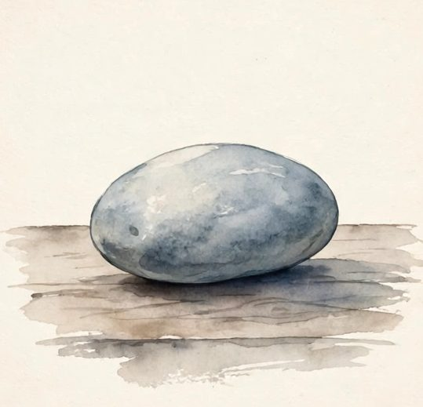
The rail at closing time: coats plain on their hooks, no tags turned outward.
Try, as an exercise of the house, describing a body — your own, to begin with — using no adjectives of judgment at all. Not the flattering ones and not the prosecuting ones; just the plain inventory the keeper would make: two hands, much used; a back that has opinions; eyes that have read a great deal by lamplight; a heart that has kept time through everything so far. The exercise is harder than it sounds and strangely restful, like setting down a bag you did not know you were carrying into every room, including the rooms of your own house.
Adjectives are the labels' smallest denomination, and the most frequently spent. Beautiful, plain, fit, failing, young-looking, old-looking — each one is a tiny verdict, issued by a court that convenes in mirrors and other people's faces, and the verdicts accumulate until the body is less a tenancy than a trial record. The body itself, notably, files no such documents. It breathes, digests, repairs, and rests in complete indifference to the adjectives, conducting its ancient business under whatever commentary the room provides. Strip the verdicts away and the body does not become vaguer. It becomes more precise — a list of working parts and kept promises, which is the register's favorite kind of description.
The house recommends the plain inventory as a permanent register. A body described without verdicts becomes, again, what it was at the beginning: the place where a life is lived, the first and last address. The adjectives may be collected at the coatroom door with the other borrowed finery. What remains is not diminished. The house does not promise that the quiet will be permanent; adjectives breed in hallways like weather. It promises only that the plain inventory is always available at the desk, for any tenant who wants their own facts back. It is simply, finally, unaccompanied — the tenant at home, in the quiet, before the day hangs anything on them at all.
60Still Here, Unlabeled
At the end of the body's hall, the register offers its plainest entry. Strip away the comparisons of age, the number in the form's small box, the letter with its careful information, the measurements, the photograph, the seasons of strength, the scars and the glances and the weather of faces — and the entry does not become emptier. It becomes shorter, and the shortness is a kind of music: still here. Two words, and they carry more of the truth than all the adjectives filed in the building. Attendance, sustained against everything, is not a small achievement wearing no costume. It is the achievement.
This is not a consolation for a diminished life; the house is strict about the difference. It is a correction of the ledger's proportions. The labels were always the marginalia — the notes other people, and time, and circumstance scribbled around a text they did not write. The text itself is the tenancy: the mornings gotten through, the people fed by these hands, the jokes survived for, the quiet kept. Read the margin if you like. People will. But do not mistake the annotations for the book, and do not let them do the reading aloud.
The keeper closes the hall the way the hall was opened, with the coats in their places and the tenant standing among them, unhurried and unclaimed. Whatever the body has been called — and it has been called everything, in both directions, by experts and strangers — the tenant outlasted each calling. Still here, unlabeled, is not the remainder after a life is subtracted. The coats will keep their hooks and their handwriting, and the room will keep its opinions, and none of it requires the tenant's signature. It is the life, with the noise turned down at last to the volume of a fact.
The Coatroom Desk
One desk receives all correspondence for this house — questions, corrections, greetings, and labels you are thinking of retiring. It is read in the order it arrives.
61From Where?
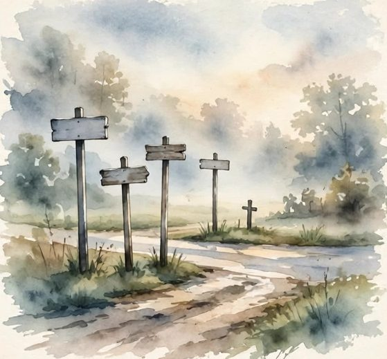
A question at the door, asked before the name is.
It may be the most frequently asked question in the coatroom, and it is asked so early — sometimes before the coat is even off — that the tenant learns to hear it as a request for filing instructions. From where? The question sounds geographical and is rarely only that. It wants a drawer: a region, a people, a story it can close around the stranger standing in the hall. Give it a city and it nods, satisfied, as if the map had explained the traveler. It has explained the map. The traveler remains unintroduced.
The house does not blame the question; doors are for asking at, and curiosity about origins is an old and often kindly instinct. But the keeper has noticed the order of operations. The origin is requested first, the name second, and the person — the actual contents of the tenancy — a distant third, if the conversation gets that far before the drawer slides shut. A birthplace is a fact about where the road started. It was never a description of the road, and it is certainly not a description of the one who walked it.
Answer the question if you like; it is only a question, and the facts are harmless. Then notice who is standing there when the drawer has closed and the room has moved on. It is the same person who was standing there before the question was asked — unfiled, unfinished, and considerably larger than the drawer. Geography begins a story. The drawer is the room's convenience, and convenience was never a tenant's obligation. Stand in the hall a moment longer than the filing takes; what the question could not hold will introduce itself, in its own time, by its own name. It does not get to end one.
62The Accent Gives You Away, They Say
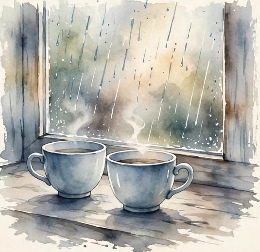
A voice crossing the hall, carrying weather from another valley.
Gives you away — the phrase deserves a moment at the desk. It assumes a concealment, a true location being betrayed by the vowels, as if speech were a coat the tongue had failed to button. The house finds the assumption more revealing than any accent. What an accent actually carries is not a secret but a history: the valleys and kitchens where the voice was formed, the first language of its lullabies, the roads it has traveled since. That is not evidence leaking. That is a register, read aloud every time a person opens their mouth.
Listeners, of course, make their filings. Within three sentences the room has placed the speaker — placed being the operative word, since the placing is done entirely by the room, for the room's convenience. The conclusion may be fond or dismissive, but its confidence is always unearned: an accent can report where a voice has lived, and it cannot report what the voice has to say. Entire libraries have been misjudged by their bindings in exactly this way, by readers who considered the cover the review. Three sentences is roughly how long the room needs; the tenant may need three decades to stop believing the placement.
So let the voice carry its weather openly. A person is not hiding behind their accent, and they are not exposed by it either; they are accompanied by it, the way a traveler is accompanied by the dust of real roads. The keeper registers voices without grading their geography. What gives a person away, in the end, is never the sound of where they come from. Accents have outlived every empire that tried to standardize them, which the house counts as evidence about which of the two — the voice or the filing system — is the permanent resident. It is what they do in the room they have arrived in.
63A Passport Is a Booklet, Not a Biography
Consider the document itself, with a clerk's respect: a booklet, bound and numbered, containing a photograph, a date, a place, and a series of permissions granted by offices. It is a serious instrument. Borders open for it; officials nod at it; without it, in much of the world, a traveler is a rumor. The house does not belittle the booklet. It merely notes, in the margin of the register, what the booklet is for. It certifies that a state acknowledges a person. It was never designed to describe one, and it does not.
The confusion begins when the booklet's categories are mistaken for the tenant's. The booklet knows a nationality; it does not know a home. It knows a birthplace; it does not know a childhood. It knows the dates of crossings and nothing of what the crossings cost or taught or ended. And when the booklet is lost, or delayed, or issued by an office that no longer exists on any current map, the person does not flicker. The states in the register rise and are renamed like weather systems; the tenancy continues underneath, unissued and unrevoked.
Keep the booklet current, keep it safe, show it at the desks that require it — the house is practical about paper. But hang it in the coatroom with the other instruments, and do not let it make introductions on your behalf. A passport answers the question of where you may go. The booklet will expire, in time, and be replaced by another with a worse photograph. The biography it never contained continues unissued in the meantime, accruing the only stamps that matter: the ones no desk can see and no border can refuse. The question of who is going, it leaves — correctly, and entirely — to you.
64The Language You Dream In
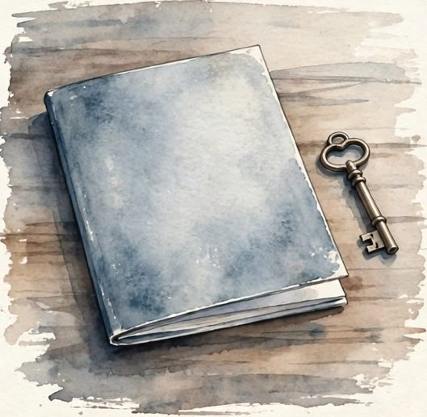
Night in the house; a voice downstairs, speaking the oldest tongue it knows.
Ask a person who lives between languages which one they dream in, and you will learn something no form has a box for. The dreaming language is usually the first one — the language of the childhood kitchen, of being called in from the yard, of the words that arrived before words had to be chosen. It surfaces at night, unguarded, conducting the old business of the mind in the grammar of beginnings. A person may conduct their entire public life in a second tongue and still dream, grieve, and count in the first. The register calls this not confusion but depth.
Belonging, filed by offices, is a matter of documents and durations. Belonging as the tenant experiences it is closer to this: which language rises when the defenses are down, which words the fever reaches for, which idiom makes a joke land in the body before it reaches the mind. None of it appears in any booklet. All of it is real registry — the house's kind, kept in the only hand that was present for the whole tenancy. Two speakers of the same two languages are not thereby the same tenant, either; the register notes that even the dreams differ, furnished from different childhoods, lit by different windows.
So the languages a person carries are not coats competing for one hook. They are rooms in the same house, furnished in different decades, and the tenant moves among them without changing address. The dream simply uses the oldest room. Wake in whichever language the day requires; speak it as well as it deserves. The dreaming voice asks for no interpreter and files no reports. It simply goes on, nightly, in the first grammar of the house — proof, if proof were needed, that the tenancy predates its paperwork. Who you are was settled deeper than vocabulary — in the place where the first words still live, and keep their own counsel, and know your name.
65Foreigner Is a Direction, Not a Person
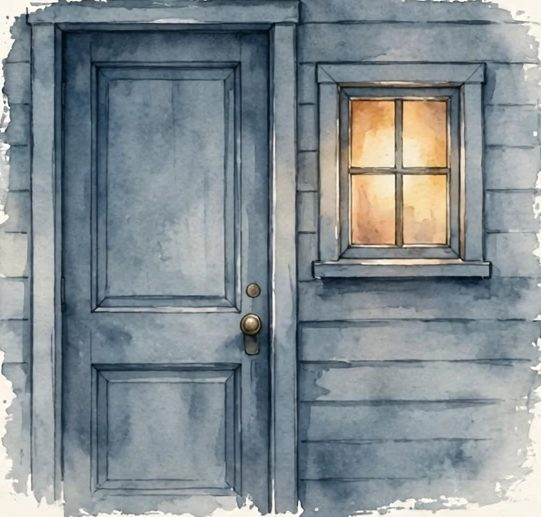
A signpost in the hall, pointing both ways at once.
The word foreigner has a grammatical secret it rarely discloses: it is a direction, not a description. It points from the speaker toward the stranger, and it reverses the moment the stranger goes home — every tenant of every country is somebody else's foreigner, one border away. The word therefore reports the position of the person saying it at least as faithfully as it reports anything about the person said of. It is a compass reading mistaken, daily and worldwide, for a portrait. The same word, reversed, covers every person in the room where it is spoken, which is why the house hears it as geography and files it accordingly.
Yet the label is worn as if it were tailored. The foreigner is expected to be permanently arriving — permanently grateful or permanently suspect, permanently explaining the customs of elsewhere, permanently recent. Years pass; the tenant learns the streets, pays the taxes, buries their dead in the local ground, and the word, in some mouths, does not age a day. The house keeps a note of this in the register: a label that cannot be outlived by conduct is not a description of conduct. It is a habit of the room.
The keeper's practice is to decline the direction and keep the person. Everyone in the hall came from somewhere else originally, if the register is followed back far enough — every family was new once, every name was strange in its first season. Foreign is where a story starts in a particular room. The keeper has hung coats from every country on the rail, in every season, and reports that they differ mostly in cut and weatherproofing. Their owners differed in everything else, which is to say in everything that mattered. It is not what the story is about, and it is never, at any hour, who is standing in it.
66Between Two Countries, One Person
There is a tenancy the registers of two countries each record imperfectly: the life lived between them. One book holds the childhood, the graves, the first language, the recipes that cannot be translated because they were never written down. The other holds the present tense — the work, the weather, the street names now known better than the old ones. Clerks in both offices sometimes regard the split file with suspicion, as if a heart with two addresses were a clerical irregularity. The house, which keeps many divided files, regards it as one of the standard shapes of a modern life.
The tenant between countries pays a particular tax, and it is not collected at any border. It is the tax of partial explanation, forever: too changed for the old room, too rooted elsewhere for the new one, fluent in two places and fully native, some evenings, to neither. But the ledger has another column. The same tenant reads two weathers, hears jokes in stereo, knows which country's bread is for which sorrow. What the files record as division, the life experiences — on the honest days — as addition. Division is the file's word. The tenant's word, on the good days, is range.
One person: the register is firm on the arithmetic. The countries are two, the languages are two, the windows face different streets — and the tenant standing between the windows is not half of anything. A house is not diminished by having more than one door. It is, if anything, more completely a house. You are not the hyphen in anyone's description. Two countries may each keep half the paperwork and the whole misunderstanding. The tenant keeps the entire tenancy, undivided, in the only registry that was present for all of it — and its arithmetic, unlike the offices', has never once come out at less than one. You are the sentence it appears in.
67The Label of the Newcomer
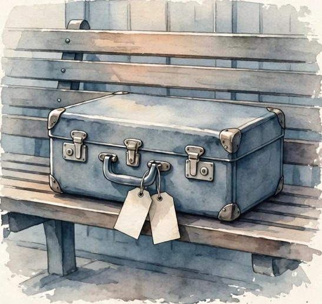
A coat still smelling of the road, hung at the end of the rail.
Every house has a first season for each tenant, and the house is kind about it, but the room often is not. The newcomer is a label with a specific texture: it makes a person legible as an arrival and illegible as anything else. Their experience, gathered over decades elsewhere, is treated as luggage not yet unpacked; their questions are noted as ignorance rather than method; their accent, their coat, their way of seasoning a soup all register as recent. New is the whole headline. The rest of the text, however long, is assumed to be still in transit.
What the room rarely considers is that newcomer is a label every single person in it once wore, including the ones longest resident — their own arrival simply happened before living memory could be embarrassed by it. The label is therefore not a rank; it is a date. And dates, as the register teaches, expire in both directions: yesterday's arrival becomes today's fixture with no ceremony at all, while the label goes on being issued fresh at the door to whoever came in last Tuesday. Nothing in the label mentions what the newcomer carried in, which is usually the most interesting part of any arrival.
Wear the season without apologizing for it. Ask the questions; the questions are how houses are learned, and more than one old tenant has been quietly corrected by a newcomer's fresh eyes. The coat will lose the smell of the road in time, and the rail will make its room. But the tenant was never the arrival. One day the hook at the end of the rail will hold someone newer, and the former newcomer — now consulted about the radiators and the customs — will remember what the first season felt like from inside. The house counts on that memory; it is how its manners are transmitted. The arrival was an afternoon in a long tenancy — and the tenancy, from its first day, was the whole story.
68Home Is Not a Category
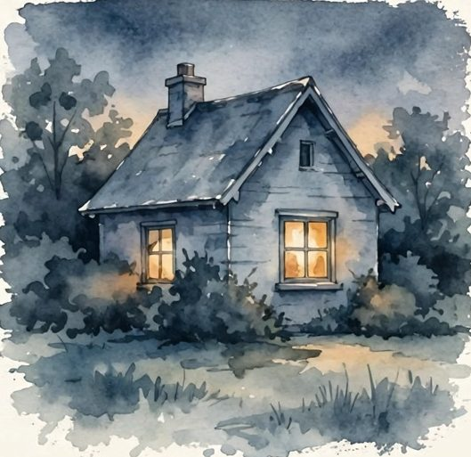
A lamp in one window of the house, lit for no committee.
The category exists because forms require it: country of residence, place of origin, home address — tidy fields, each with its box, each pretending that home is a location that a clerk could verify. The tenant fills them in, correctly, and knows all the while that the answers are coordinates of something else entirely. Home, as lived, is not on the form's list of options. It is where the tea is made without measuring. It is the street whose sounds the sleep trusts. It has been known to fit in a single rented room and to be absent, entirely, from a large and legally owned house.
This is why the question where is home can stop a person mid-sentence while what is your address cannot. The address is filed; the home is felt, and the two documents frequently disagree. For tenants between countries the disagreement is simply more visible, but every life knows some version of it — the childhood house sold, the city changed beyond recognition, the home that turned out to be a person, or a season, or a language, rather than a place at all. Categories record where a person is kept. They have never once recorded where a person is kept warm.
The house keeps its own definition in the front of the register, in the keeper's plain hand: home is where your name is said correctly and your chair is kept. By that measure it can be built anywhere, carried anywhere, and lost and rebuilt more than once in a tenancy — which is not a weakness of the definition but its accuracy. A category can be revoked by an office. A home is revoked by no one. It goes where the tenant goes, because the tenant is where it lives.
69Translated, and Still Yourself
To live in a second language is to be translated daily, and translation — as every honest translator admits — is an art of honorable losses. The joke arrives without its timing. The endearment arrives wearing a suit. Whole rooms of the self, furnished over decades in the first tongue, have no exact equivalent in the second and must be described around, gestured at, carried across in pieces. Listeners in the new language meet a genuine edition of the person, and it is not the complete one. This is not deception. It is the physics of the crossing.
The danger is only in the filing. The room, meeting the translated edition, may conclude that the translation is the tenant — quieter, simpler, less funny, less precise than the original they cannot read. And the tenant, hearing their own flattened echo year after year, may half-conclude it too. The house posts a notice on this subject in the coatroom, in both languages: an abridged edition is still the author's work, and the unabridged one exists, entire, in the keeping of those who share the first tongue — and in the tenant's own, whether or not it is currently being read aloud.
So be patient with your own translation, and merciful toward other people's. What crosses is real; what stays behind is also real; and the person is neither the cargo nor the loss but the whole shipment, most of it in transit at any given hour. You are not the version of you that fits in the new language. Something is always in transit, and something is always home. The tenant, standing in the doorway between the two, is the address both are moving toward. You are the one doing the carrying — and the carrying, done daily and largely unthanked, is itself a fluent sentence about who that is.
70The Border Crosses the Paper, Not the Person
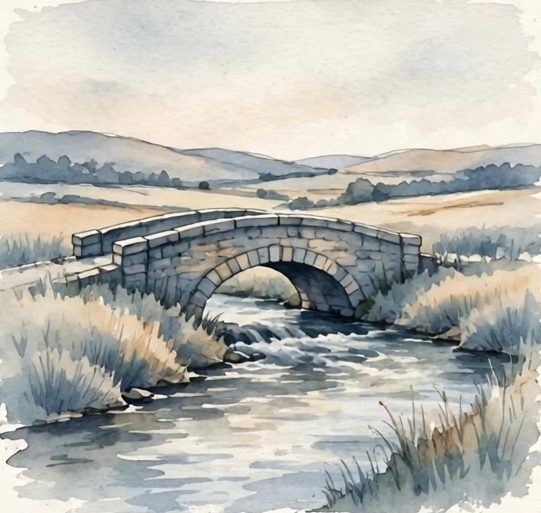
A line drawn across the map on the desk, stopping politely at the tenant's feet.
On the map in the front hall, borders are drawn with great confidence: colored lines, hatched zones, names in two alphabets arguing across a river. The lines govern real things — jurisdictions, currencies, the stamps in booklets — and the house respects them the way it respects locks and weather. But stand in that hall long enough and a quieter fact emerges from the map's own testimony. Every line on it was drawn across paper, by people, at a date. Before the date, the river was a river. After it, the river was also a border. The river, consulted, reports no change in its duties.
Persons are older than the lines drawn around them, and more continuous. A grandmother's village may have been filed under three different countries in her lifetime without her moving house once; the flags changed over the roof while the bread recipe continued underneath, unamended. The register keeps such entries without embarrassment. It is the paperwork that migrates — across desks, across decades, across the names of states — while the tenancy, examined closely, stays remarkably itself: same hands, same hungers, same jokes at the table. The register keeps such entries the way it keeps weather: noted, respected, and never mistaken for the tenant's own climate.
So let the paper have its lines; paper is good at lines, and lines have their uses at desks and crossings. But do not let a line drawn on a map be redrawn, by anyone, across a person. The border is an instruction to documents. Maps will be redrawn; they always are, in inks that fade at different speeds. The person crossing at the desk will be asked for the booklet, will show it, and will walk on — the same tenant on both sides of the line, which is the fact the line was never able to alter. It was never an instruction to you — and the figure standing in the hall, older than the ink and certain to outlast this edition of it, is the proof the house keeps on file.
71Roots Are Not a Label
Below the house, where no visitor goes, the old work continuing in the dark.
Labels are hung where they can be read: on coats, in registers, at the height of other people's eyes. Roots observe a different arrangement. They work out of sight, in the dark, without signage, and their whole function is nourishment rather than announcement. The confusion between the two has filled many an afternoon. A person's origins get printed on a tag — a people, a place, a tradition summarized in a word — and the tag is then treated as if it were the root system: as if what feeds a life could be read off a label in the hall, between the hats.
A root is not a summary; it is a supply line. It does not describe the tree — it feeds it, from sources the tree itself may only half remember: a grandmother's stubbornness, a language's way of blessing bread, a landscape's particular light absorbed before memory began. Roots also do something labels never do. They keep working after the tree is moved. Every gardener knows the transplanted thing draws on its old ground for a long season while quietly extending new roots into the new — both systems true, neither one a betrayal of the other.
So honor the roots by the register's method: tend them, don't display them. They are not an argument to win at other people's tables, nor a verdict on where the tree may grow. What is underneath a life is underneath it — private, patient, and busy. The label can be read by anyone passing. Visitors will go on asking about origins in the hall, and the tags will go on being printed. Underneath, unphotographed and uninterviewed, the roots conduct the old business of keeping a life standing — which they were doing long before anyone thought to make a label of them. The roots answer to the tenant alone, and their report, delivered nightly in the dark, is simple: still fed, still yours, still growing.
72A Citizen of One Morning
Before the offices open, before the booklet is stamped or the form is filed or the category is confirmed for another year, there is the morning itself, and in it a simpler citizenship. The tenant wakes. The light arrives on schedule, asking for no documents. The kettle makes its old argument; the street outside belongs, for that hour, to whoever is awake in it. This is not sentimentality — it is the order of operations, and the house keeps the register in that order deliberately. The person precedes the paperwork. Every day of a life begins with the tenancy and only later gets to the filing.
Citizenships of paper are real, and they matter, and the house has never suggested otherwise — they open and close the practical doors of the world. But they are memberships, renewed and revocable, in arrangements younger than the tenant's own heartbeat. The morning citizenship is older and cannot be revoked by any office: it is the standing of a person in the day they are actually living, entitled to its light and its weather by the ancient qualification of being present for it. No committee has ever voted on it. None has needed to.
So begin where the register begins. Drink the tea as a citizen of the morning first and a holder of documents second; the documents will keep, and the morning will not. Whatever the offices decide this year about categories and crossings, the prior fact stands at the head of the page in the keeper's hand: a person, awake, in the light, already belonging to the day. Everything else is correspondence. The offices will open at nine and do their necessary work, and the house wishes them well at it. But the day's first entry was written before they unlocked their doors, and it is the entry the evening's last reading will return to. This is the residency.
73Someone's Child, Always
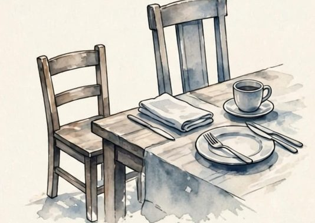
The smallest coat on the rail, kept long after it could be worn.
Of all the roles in the register, this is the only one no tenant applies for, resigns from, or outgrows on paper. Before the name was chosen — sometimes before the name existed — the tenancy was already a relationship: someone's child. The fact arrives first and stays longest. Careers end, marriages begin and are folded away, titles are framed and then boxed in the attic, and still the oldest entry in the book stands unamended at the front, in the handwriting of people who may by now be entries themselves. The house has never found a procedure for closing it.
The role is worn in both directions and at every age. At eight, it is the whole coat. At forty, it returns without warning — in the way a person folds a letter, says a proverb they did not decide to learn, or hears their own voice, mid-sentence, speak in a parent's exact cadence. And for many tenants the role eventually doubles: they become the ones keeping the rail for someone else's small coat, and understand from the keeper's side what was once only felt from the hook's. The register cross-references nothing else so consistently, and explains nothing about it at all.
The register treats this entry with unusual plainness, because it is not, in the end, a label at all. Labels describe; this one connects. To be someone's child is not a costume among costumes — it is the first thread of the garment, woven before the wearer could reach the loom. When the other roles are hung up one by one at the close of a life, this is the one still on its hook in the morning. It is the one entry that was never a label, because it was never pasted on. It grew. Someone's child, always: the coatroom's oldest fact, and its tenderest.
74The Reliable One
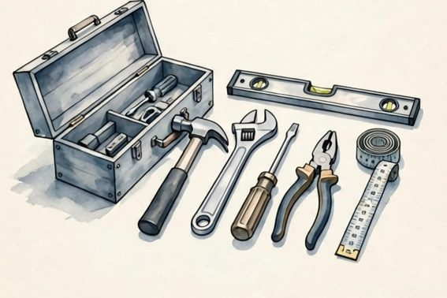
A coat checked in early every day, and the phone that rings for it first.
In every family, every office, every circle of friends, the casting happens quietly and early: this one will be the reliable one. It is a compliment at the ceremony and a workload ever after. The reliable one's phone rings first in every emergency. Their yes is assumed in the planning; their no, when it finally arrives, is received as a malfunction — as if dependability were a utility the household had subscribed to, rather than a person's daily, costly, unrenewed decision to keep showing up. The casting is rarely announced; it accumulates, the way snow accumulates on the roof that has never once leaked.
The house keeps the reliable one's coat with particular care, because it knows the garment's secret weight. Reliability is not a temperament; it is a practice, and practices are paid for in the currency of evenings, tempers, and crises quietly absorbed so that other people's evenings stay smooth. The label makes the payment invisible. Once the role is cast, the work stops being noticed as work — it becomes weather, expected and uncommented, and the one producing it becomes the only person in the room whose reliability is never, ever reciprocated in kind.
So let the register record what the room forgets: the reliable one is allowed to be rained on, and late, and unreachable, and in need — without the tenancy being reclassified. If you wear this coat, hang it up sometimes, in full view, and let the household discover what the weather does without you for a day. And if the coat is yours to honor rather than wear, honor it while it is still being worn. Dependability, thanked, lasts longer. A thanked coat wears lighter. The register has checked. The house has the records to prove it.
75The Hero of a Story You Didn't Write
It happens more often than the register likes to admit: a person discovers, sometimes years later, that they occupy a heroic role in a story being told in another house. In someone's retelling, you said the exact words at the exact door; you arrived; you knew what to do. The teller means it gratefully, and the gratitude is real. But the portrait has been improved in transit — the hesitation edited out, the luck reassigned to wisdom, the ordinary frightened helpfulness promoted to destiny — and the person in the portrait, meeting it, may not recognize the tenant it claims to depict.
Being cast as a hero is one of the heavier light garments. Heroes are not permitted sequels of an ordinary kind: they must go on knowing what to do, in that teller's house, at every retelling, forever. The role also quietly confiscates the true story, which was usually better — messier, more human, more instructive — than the legend that replaced it. The house keeps both versions in the file, the event and the epic, and notes the distance between them without blame. Gratitude inflates. It is one of gratitude's native customs.
Accept the thanks; decline the pedestal, which is only a hook placed at an unlivable height. You may tell your own version, plainly, when the floor is yours: the fear included, the guesswork included. It will not diminish the teller's gratitude, which was never really about your perfection. Someone needed a hero in that chapter, and you were standing near the door. The door was real. The chapter was real. The shining figure in the frame is theirs — and you are free to go on being the one who simply helped.
The Coatroom Desk
One desk receives all correspondence for this house — questions, corrections, greetings, and labels you are thinking of retiring. It is read in the order it arrives.
76The Villain in One Telling
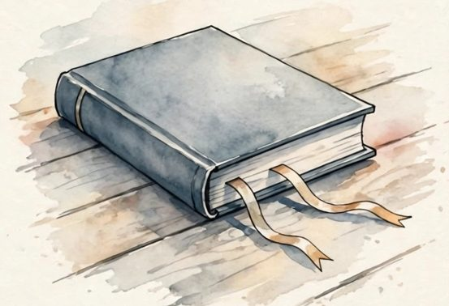
The same portrait, hung in a darker hall across town.
The casting office works both sides of the street. In another house — perhaps a street away, perhaps at the other end of the same family — the same tenant occupies the opposite role: the villain of a story told with equal confidence and equal editing. The refusal that was self-preservation in your telling is selfishness in theirs. The boundary that kept your house standing is, in their chapter, the wall that shut them out. Both stories are told in good faith. Neither contains the whole tenant, because no single chapter, however honestly kept, ever does.
The discovery is usually a shock and always an education. A person who has been the hero in one hall learns they are the warning in another, and the two portraits, placed side by side, cancel each other's authority entirely — which is, the keeper insists, the correct outcome. If opposite rooms can cast you in opposite roles from the same material, then the roles were never measurements of the tenant. They were measurements of the rooms: their needs, their weather, their positions in the plot. Two portraits of one tenant, each certain, each incomplete — the house hangs them facing each other and lets them argue it out in private.
The house does not advise a campaign of correction; villains who tour the district disputing their casting tend to be recast on the spot. The register's counsel is quieter. Live so that your own book is accurate, answer direct questions directly, make the amends that are genuinely yours to make — and leave other houses' storytelling to other houses. Their chapter about you will be read by their visitors. Your tenancy will be lived by you. In the long run of the register, the tenancy is the only text that gets a final edition.
77The Guest, the Host, the Stranger
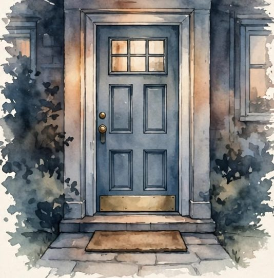
Three chairs by the coatroom fire, and one tenant trying each in turn.
Three roles rotate through every tenancy like chairs around a fire, and no one keeps a single chair for long. The guest: received, fed, forgiven the house's customs in advance, holding the pleasant and precarious status of the welcomed temporary. The host: the one who knows where things are kept, whose shoulder the room's comfort rests on, whose welcome is work disguised as ease. And the stranger: the figure at the door before the door opens, read in one glance by a household deciding what it is looking at. Every tenant has been all three, sometimes within the same week — sometimes within the same evening, in different houses on the same street.
The rotation is the education. The host who has recently been a stranger keeps a merciful door. The guest who has hosted knows what the soup cost and says so. The stranger who has been both learns not to take the glance at the door as a verdict, having delivered that glance themselves, from inside, in warmer years. The house regards this circulation as the nearest thing to a moral curriculum it offers: no examinations, no certificates, only the chairs, exchanged often enough that no tenant can honestly mistake their current seat for their identity.
So take whichever chair the evening assigns and take it lightly. Guest is not a rank, host is not a throne, and stranger is not a sentence — they are the house's three weathers of belonging, passing over the same tenancy in turn. The register writes your name once, in the residents' book, whatever chair you are sitting in when the ink dries. The chairs are furniture. Guests become hosts, hosts become strangers in the next town, strangers are seated by the fire and handed the soup — and the name in the residents' book does not change hands with the chairs. It was never the chairs' to carry. The resident is the fact.
78The One Who Left
Every family register has the entry, and every office, and every circle of friends: the one who left. The phrase is pronounced as a complete biography, which it is not. It summarizes a departure and deletes the decades on both sides of it — the reasons assembled slowly, like weather; the leaving itself, which was almost never one door but a hundred small ones; and the life afterward, conducted elsewhere, which in the old room's telling remains permanently offstage, as if the leaver had exited the story rather than merely the building.
The label conceals a small asymmetry the house finds worth recording. Those who stayed get to narrate; departure, by definition, is not present to edit. So the leaver's chapter is written by the remaining tenants, from the remaining angle, and the hook stays empty in the hall as an exhibit: see, the empty hook says, what this person's whole story amounts to. The register disagrees, in the keeper's steady hand. An empty hook amounts to a coat taken. The coat's owner amounts to a life, which is being lived, in full, at another address.
If the hook is yours, the house offers the leaver's portion of the doctrine: you are not required to return and correct the exhibit, nor to carry the old room's summary into your new one. You left a place, not a self. The people who know the whole tenancy were never working from the hook. And if the empty hook is in your hall, look at it the keeper's way — not as a verdict on the one who left, but as a question the room still owes them, should they ever come back through the door.
79The One Who Stayed
The same coat on the same hook, year after year, outlasting every rumor about it.
Opposite the empty hook hangs the coat that never left, and it carries a label of its own, no lighter for being honorable. The one who stayed: in some tellings the loyal figure, in others the one presumed to have had nowhere else to go. Both readings are conveniences. Staying, like leaving, is a decision renewed in private, daily, for reasons that range across the whole register — love, duty, stubbornness, hope, fear, the plain conviction that this ground is where the work is. The room, preferring a single motive, picks whichever flatters the teller and files it as the biography of the stayer.
The stayer's invisible labor is continuity itself. Someone keeps the house's memory in working order: which winter the pipes froze, what the departed were like before they were chapters, where the documents live, how the soup went. This custodianship is rarely thanked in proportion, because continuity, like reliability, becomes invisible precisely by never failing. And the stayer pays a quiet price the leaver does not: they must live among the exhibits, watching other people's stories edited in the halls they still walk through every morning. Whole reunions are stage-managed, invisibly, out of the stayer's memory, and credited — invisibly — to the occasion.
The register honors staying as it honors leaving — as an act, not an essence. The one who stayed is not the house's furniture, and the staying is not a life sentence written by other people's departures. It is a tenancy chosen, and like all chosen tenancies it may be chosen again tomorrow or honestly revised. When the evening comes to hang up the roles, the stayer's coat comes off the hook like anyone's — and the person underneath it was never the staying. They were the one who, each day, decided. There is all the difference in the world in that.
80Roles Are Cast; People Aren't
The hall at closing: chairs empty, portraits dark, one tenant locking up.
The hall of roles closes on the distinction the whole house was built to keep. A role is cast: assigned by a room, for the room's purposes, according to the room's needs of the season — the child, the reliable one, the hero, the villain, the guest, the one who left, the one who stayed. Casting is real work and the roles are real duties, and the house does not mock them. But every role in the register shares one property the tenant does not: it can be recast. It has been recast, repeatedly, by different rooms, from the same material, without the tenant changing a single fact about themselves.
People are not cast. That is the sentence the keeper writes at the end of the hall, in the largest hand the register allows. A person is not assigned by the room, is not improved by the room's editing, and does not expire when the production closes. The roles will be hung up one by one across a lifetime — some with gratitude, some with relief, some by other hands after the tenant has left the hall entirely. What remains, when the last chair is empty and the portraits have gone dark, is the thing that was never playing any of them: the tenant, who filled each role the way weather fills a valley, completely and temporarily.
So wear the roles well while they are yours — they are how the house runs, and kindness inside a role is real kindness. But keep the register's distinction polished like brass at the door: the casting is the room's business, the person is not. The playbill yellows in its frame by the door. The name it never printed is the one the lights were for. When they call the roles at closing time, answer to the ones that are honestly yours, and then go home by your own name — the one that was never in the playbill, and was the whole audience's reason for coming.
81The Supporting Character in Your Own Life
There is a peculiar sorrow in discovering that you have been cast, in your own life, as a minor part. The leading roles went to louder people, or to circumstances, or to a version of yourself that other people found easier to applaud. You carried the letters, held the door, remembered the birthdays, and stood where the light did not quite reach. The house sees this often. A visitor arrives believing he is scenery, because for years everyone treated him as the furniture of their own important story, and he was too courteous, or too tired, to correct the register.
In the coatroom this has a simple explanation. Somewhere along the way, someone handed you a coat labeled supporting character, and you wore it because the evening was cold and it was offered kindly. The label did its work quietly. You began to speak less in rooms where you had every right to speak. You apologized for taking up the space of a whole person. The coat fitted so long that you forgot it had been handed to you at all, and began to believe the shoulders underneath were shaped that way by nature.
But the keeper will tell you, without raising his voice, that casting is not identity. A part is a coat; it can be returned to its hook at any hour. The person who stood in the wings all those years was never minor — only underlit. He was present for every scene, carrying more of the story than the programme ever admitted. Hang the label up, stand a moment in the plain light of the coatroom, and notice that the life is still yours, entire and unabridged, waiting for you to walk to the centre of it.
82When the Family Gives You a Part
A long table, the same chairs assigned year after year.
Every family keeps a small theatre, and its parts are assigned early. One child is the sensible one, one is the difficult one, one is the clown who must lighten every heavy room. The assignments are made before the cast can read, and they are renewed at every holiday table with the reliability of a season ticket. The family means no cruelty by it, usually. It is simply easier to love a person whose part you already know than to keep meeting the stranger they are slowly becoming.
The trouble is that a family part, worn long enough, begins to issue instructions. The sensible one may not fall apart, even privately, without feeling he has broken contract. The difficult one finds her mildest opinions heard as rebellion. The clown discovers that grief, in his mouth, is taken for another joke. Each of them is wearing a coat sewn by loving hands, and each of them is, underneath it, considerably more various than the household register allows. Families are keepers too, but their register was written long ago.
The house does not ask you to resign from your family, only to notice the difference between a part and a person. You may play the sensible one at dinner and still be gloriously unsensible on the drive home. The coat can be worn for an evening without being mistaken for skin. What matters is that you, and not the seating plan, decide when it comes off. Love that requires you to stay in character forever is asking for the coat, not for you — and you are the one who was invited.
83You Are Not Their Summary of You
A stranger's postcard, describing a house it never entered.
Everyone who knows you carries a summary of you, and most of the summaries are short. He is the reliable one. She left. He never really recovered. These sentences travel well; they fit in introductions and obituaries and the small talk of people who met you twice. A summary is a useful thing for the person holding it. It is only a disaster when the person summarized begins to govern his life by it, trimming every new chapter so it will not contradict somebody else's paragraph about him.
Consider how the summaries were made. They were written by people who saw you at particular hours, in particular weather, through the lens of their own needs. The colleague's summary omits your tenderness; the old friend's omits your growth; the enemy's omits everything but the evidence. Each is accurate the way a postcard is accurate — a real view, from one side, in one season. The house files postcards gladly. It simply refuses to confuse the collection of postcards with the building, which has rooms none of the senders ever entered.
So let their summaries hang in the coatroom with the other coats, each on its numbered hook, none of them yours to wear by obligation. Read them, if you like, for what they reveal about the readers; travellers have learned as much from other people's postcards. You may be summarized; you cannot be contained. The keeper's rule is gentle and absolute: a description of you belongs to the describer. The person described walks out of this house under no summary at all, carrying only what he chooses, into weather the postcards have not predicted.
84Closing Someone Else's Book
There comes an evening when you realize you have been reading, for years, a book about yourself that somebody else wrote. A parent began it, or a school, or a first love with a confident hand. Its chapters have titles like The One Who Failed the Examination and The One Who Was Too Much, and you have been living inside its plot, consulting it before every decision, as if the ending were already printed and your task were merely to arrive at it on schedule. It is a well-made book, which is what makes it dangerous; the poor ones are set down by page ten.
Closing such a book is not an act of war against its author. Often the author wrote in good faith, with the limited light available, and sometimes with love that simply had poor eyesight. Nor is closing it an act of denial: the events in it happened, and some of its pages are even true. But a book about you, however true its incidents, is not you. It is paper. The house keeps many such volumes on its shelves, left behind by visitors who discovered, to their astonishment, that their hands were free once they set the book down.
So close it the way the keeper closes the register at night: without anger, without ceremony, with a hand flat on the cover for one quiet second. What is in it stays in it, neither denied nor obeyed, filed now under history rather than under instructions. Thank it, if thanks are possible, for whatever it genuinely taught. Then walk out of the coatroom as the unwritten person you are. The next book, if there is to be one, will be written in pencil, by you, and its final page will be left respectfully, permanently blank.
85"I'm Just…"
A small apologetic doorway, ducked through out of habit.
Listen for the smallest sentence in the language: I'm just. I'm just a clerk. I'm just visiting. I'm just saying. It is a coat two sizes too modest, worn to enter rooms without alarming anyone. The word just does quiet, obedient work — it shrinks the speaker to a size the room will tolerate. Nobody was ever enlarged by it. It is the verbal equivalent of checking your whole self at the desk and carrying only a claim ticket into your own afternoon. It is modesty performed as an apology, and the room, which asked for neither, receives both.
The house has a theory about this sentence: it is rarely humility. Humility is accurate and calm; it can state a fact at full size. I'm just is fear wearing humility's coat — fear of being weighed and found presumptuous, fear that a full claim will invite a full refusal. So the claim is discounted in advance, by the claimant, before anyone else can do it. It is a pre-emptive hanging-up of the coat, performed in the doorway, in the hope that the keeper will be merciful. The keeper, for the record, had no sentence planned.
Try, as an experiment in honesty, the sentence without its small word. I am a clerk. I am visiting. I am saying. Nothing arrogant has occurred; a fact has simply been allowed its natural height. The coatroom does not demand that anyone be grand. It only notes that you were not issued in a smaller size than other people, and that the person who arrived saying I'm just and the person who arrives saying I am are the same person — one of them merely remembered it sooner.
86The Label You Chose at Fifteen
A school corridor, a name chalked up and never quite washed off.
At fifteen, a person chooses labels the way he chooses his first coat: quickly, in poor light, mostly to match the others in the corridor. The rebel. The brain. The one who does not care. These choices are not foolish — they are a young person's first attempt at being somebody definite in a world that keeps asking. But they are made with fifteen years of evidence, which is to say almost none, and they are made to be read by an audience of other fifteen-year-olds, history's least reliable critics.
The strange thing is how long such a coat can stay in service. Decades later, the rebel still cannot accept a kind instruction without hearing a cage door. The brain still apologizes for not knowing something instantly. The one who did not care still performs not-caring at moments when caring is the whole truth of him. The label was chosen by a boy or a girl who has since grown, changed countries, buried people, learned languages — and yet the coat hangs by the door, taken down each morning out of loyalty to its original purchaser.
The keeper is fond of the fifteen-year-old; he was doing his best with what the house had given him. But the keeper will also say that loyalty to a young chooser does not require obedience to his choice forever. Thank him. He got you through the corridor. Then choose again, at your present age, with your present evidence, in better light. The new label, if you take one at all, should be cut for the person actually standing at the desk — not tailored for a ghost in a school uniform.
87Failure Is an Event, Not a Name
A failure is something that happened on a Tuesday. It has a date, a place, witnesses, a sequence of causes that can be examined like the wreckage of a cart. It is, in the strictest sense, news. And yet the human mind, which loves economy, keeps trying to promote it from the news pages to the masthead: not I failed at this, but I am a failure. The event, which was over in an afternoon, is issued a coat and a hook in the coatroom, and invited to live there permanently, answering to your name.
The house resists this promotion firmly. In its register, events are written in one column and persons in another, and the columns are never merged. A bankruptcy, a divorce, a dismissed application, an examination left blank — these are entries in the events column, some of them heavy, all of them real. None of them is a name. A name is what you answer to when called. No one is obliged to answer to the worst afternoon of his life as though it were his christening, and the keeper will not call you by it, however often you present yourself under it.
Let the failure be examined, paid for, learned from, even mourned — events deserve their full weight, neither more nor less. Then let it take its place in the past tense, where events live. You remain in the present tense, where persons live. The tense is not a technicality; it is the whole difference between a record and a resident. The coatroom's oldest wisdom is also its plainest: what happened to you is a chapter of weather. The one it happened to is the climate's witness, not the weather itself, and he walks out of this house under his own sky.
88Success Is Also a Costume
A laurel wreath, hung carefully beside the overcoats.
If failure must not be mistaken for a name, fairness requires the same courtesy for success. The promotion, the prize, the year everything sold — these too are events, pleasant ones, with dates and witnesses. But success is a more seductive coat than failure, because it is warm, well cut, and admired in mirrors. A person can wear it so gladly that he begins to fear the body underneath is nothing without it, and from that fear comes the peculiar exhaustion of the successful: the coat must never be taken off, even to sleep.
The house has watched laurels arrive at the desk with the same anxiety as rags. The celebrated visitor checks the wreath nervously, asks whether the hook is strong, whether anyone has handled it. He has confused his worth with his wardrobe's best item. And success, being an event, has the event's habit of passing. Seasons turn; the market, the audience, the body itself changes its mind. If the coat was the person, its fading is a death. If the coat was a coat, its fading is only weather, and the person books another season.
So wear success the way the keeper recommends wearing everything: gratefully, loosely, and with the certain knowledge that you were somebody before it arrived. The applause was real and may be enjoyed at full volume. But at closing time, hang the laurel on its hook with the overcoats, equal in kind if not in shine. The one who walks home bareheaded is not diminished. He is simply the person again — the same someone the success visited, and the same someone who will be there, unhurried, when it has gone.
89The Story You Tell at Parties
A glass raised, the same anecdote polished to a shine.
Everyone keeps one story for parties: the near-disaster abroad, the famous man met in a lift, the year in the strange city. It is told so often that it acquires the smoothness of a handled coin. Hosts request it. Friends mouth the punchline. It is a good story — that is the danger. In the economy of an evening, the story becomes your coat, the garment by which the room knows you, and gradually the teller begins to serve the story instead of the story serving the teller, steering every conversation toward the one anecdote in which he is guaranteed to shine.
Notice what the party story leaves out, as all coats leave out the body. It has no room for the years since, the quiet changes, the person you have been becoming in the unstoried majority of your life. Worse, it can begin to edit the future: new experiences are quietly assessed for their anecdote value, and the ones that would contradict the famous story — the failure, the ordinariness, the change of heart — are never mentioned, then never quite lived. A person can retire into his own repertoire years before he dies, touring the same ten minutes.
The house suggests a gentle experiment: at the next gathering, leave the story in the coatroom. Tell instead something unfinished, something from this season, something whose ending you do not know. It will feel like arriving underdressed; it is actually arriving as a person instead of a performance. The old story may keep its hook — it earned it. But stories, like coats, are for carrying into the world, not for living inside. The teller is always larger than the tale, and considerably more interesting at first hand.
90Perfectionist, Procrastinator, and Other Pets
Some labels are kept the way pets are kept: fed daily, excused everything, and introduced to visitors with rueful affection. I'm such a perfectionist. I'm a terrible procrastinator. The tone is confession, but listen closely and you will hear the comfort underneath. A pet label asks so little. It explains the unfinished letter, the brutal self-criticism, the missed beginning, in advance and in perpetuity. It even receives sympathy, occasionally admiration. Of all the coats in the room, these are the ones their owners would be most reluctant to surrender at the desk.
The house does not dispute the animals' existence; it disputes their papers. A perfectionist is supposedly a species, permanent as blood type. But observe the same person on holiday, or in love, or at play, and the species vanishes — standards relax, beginnings happen easily. What remains is not a species but a habit with weather: perfectionism in the office, procrastination before frightening tasks. Habits are real, trainable, and occasionally useful. They are simply not names. A habit can be retrained like a dog; a species can only be obeyed, which is why the label prefers to be mistaken for one.
So the keeper proposes a demotion, kindly meant: from pet to tool. Keep the perfectionism for the work that deserves it, on a lead, by the hour. Keep the dawdling as a signal that a task frightens you, which is information, not identity. What you feed daily will follow you from room to room — choose, then, what you are feeding. And remember that the person holding the lead Feed a trait daily and it follows; name it a species and it leads. And remember that the person holding the lead was never himself one of the animals, however long he has walked them.
The Coatroom Desk
One desk receives all correspondence for this house — questions, corrections, greetings, and labels you are thinking of retiring. It is read in the order it arrives.
91The Label That Protects You
An umbrella carried faithfully through a dry summer.
Not every label is a burden, and the house is too honest to pretend otherwise. Some were taken up as shields. The label of the busy one protects a person from requests he cannot refuse outright. The label of the ill one, the difficult one, the one who does not do gatherings, can guard a fragile season of life more effectively than any explanation. A coat, after all, is made against weather, and some weather is real. The keeper checks such coats without a flicker of judgment; he has seen the storms they were bought for.
The question is never whether the shield once served — it almost always did. The question is whether the weather has changed while the shield stayed up. Protection has a way of outliving its emergency, because nothing announces the emergency's end. The invitation not sent, the opportunity not mentioned, the friendship that quietly routed around the label: these are the small taxes a shield collects in peacetime. A person can spend a decade behind an umbrella raised against a rain that stopped in another country, wondering why the light seems thin.
So the house recommends an inspection, not a surrender. Once a season, hold the protective label up to the light the way the keeper holds a coat: is the storm it answers still the storm outside? If yes, carry it with a clear conscience and no apology. If no, hang it within reach rather than wearing it — protection kept is still protection. The keeper himself keeps an umbrella by the desk, older than some of the visitors, and is not embarrassed by it. The point was never to be undefended. The point is that you, and not an old emergency, decide what the person requires today.
92A Trait Is a Climate, Not a Cage
Morning fog over a valley that will be clear by noon.
You are, let us grant, a cautious person. Or a fiery one, or a melancholy one, or one who loves company the way plants love light. The house does not argue with traits; it has read too many registers to deny that people arrive with weather of their own. A trait is a climate — the prevailing conditions of a temperament, the season toward which a character leans. Climates are real. Crops are planned by them. No sensible keeper laughs at a climate, and no honest visitor should pretend his is tropical when the frost, every year, says otherwise.
But a climate is not a cage, and the difference is everything. A climate describes what usually happens; a cage prescribes what may. The cautious man still crosses, sometimes, on the one brave errand of his year, and the crossing is not a betrayal of his climate — it is weather within it, the single clear day that proves the sky is larger than its average. The melancholy woman laughs, some evenings, with her whole body, and the laughter is not false. Traits bend around acts the way seasons bend around a warm week: noticeably, lawfully, without ceasing to be themselves.
Hold your traits the way a good farmer holds the forecast — respectfully, and with plans that leave room for the exception. The almanac deserves its respect — it has been right too often to mock — but it has never once been the whole sky. You will be mostly what you have been; the house keeps no illusions about the strength of prevailing winds. But mostly is not only, and the exceptions are where a life is actually lived. The cage was never locked. It was a climate, misread as architecture, and the person inside it has had the key in his pocket the entire time.
93The Old Self-Description, Outgrown
There is a description of yourself that you still give, at desks and in applications and in the first hour of new friendships, which was once perfectly accurate and is accurate no longer. I am hopeless with money. I am not a reader. I am the one who always leaves. Each was true in its season — the evidence was fresh, the description earned. But people are the only garments that grow, and a self-description does not grow with them. It stays the size it was tailored, and the person goes on wearing it, pinched and apologizing, long after the seams should have been let out.
Outgrowing is not betrayal, though it can feel like one. The old description may have been a parent's gift, or a survival instrument from a hard decade, and setting it down can feel like declaring that the person who needed it was wrong. He was not wrong. He was smaller, the way a child in small shoes is not wrong. The house keeps such outgrown descriptions the way families keep first shoes: on a shelf, honored, unworn. What was true of you then was true then. The register is simply being brought up to date, as any honest register must be.
So revise, without drama and without amnesia. The revision need not be announced; registers are corrected in pencil every day, and no trumpet attends an honest amendment. Say what is true now, in the present tense, and let the old sentence retire with its dignity intact. You will find the new description awkward at first, like any garment not yet shaped by wear — give it a season. The keeper watches this happen at his desk more often than any other miracle, if it is one: a person standing straighter, in words his own size, discovering the coatroom had his measure right all along.
94Forgiving the Label-Maker
An old hand in the register, the ink long dry, the page turned.
Somewhere behind your heaviest label stands a label-maker: a teacher who announced you to the class, a parent who named you at the table, a friend whose joke outlived the friendship. It is natural, in the coatroom, to turn at last toward that person with the account book open. They wrote the word; you wore it for thirty years. The house does not hurry this reckoning, and it does not forbid it. But it has observed, over many seasons, what the reckoning costs the person who carries it — because resentment, too, is a coat, and among the heaviest in the building.
Forgiving the label-maker does not mean ruling that the label was just, or even that it was meant kindly. Some were careless; a few were cruel; most were ordinary people repeating the words that had been hung on them in their own childhoods, in an unbroken handing-down of coats. Forgiveness, in the house's plain accounting, is a decision about the present tense: the maker's sentence ends, not because it was pardoned by a court, but because the person wearing it has stopped serving it. The ink is dry. The page, however, belongs to whoever holds the book now.
So forgive, if you can, in the coatroom manner — quietly, without a ceremony the maker may never hear of, as one returns a coat that was lent by mistake. What is released is not the maker, who is elsewhere living with his own wardrobe. What is released is the wearer, whose shoulders come down an inch in the mirror. The register keeps the old entry, crossed through once, legibly. Nothing is torn out; the house is against tearing. What is crossed through can still be read, which is how the wearer knows it no longer binds. Forgiven label-makers fade into history. Forgiven wearers walk out into it, considerably lighter than they arrived.
95Describing Yourself in Verbs
Hands at work on a table — mending, sorting, beginning again.
Nouns are the coatroom's native currency: teacher, mother, failure, genius. They hang still and can be counted. Verbs refuse to hang. A person described in verbs — she mends, he listens, they begin again — is a person caught in the act of living rather than posed for the register. This is why the house, when a visitor despairs of his nouns, sends him to the verbs. The nouns may be disputed, outgrown, or assigned by enemies. The verbs are simply what happened today, under his own hands, and nobody's summary can take them from him.
The practice is more than a grammatical trick. To say I am a writer is to accept a coat that must be defended daily against the blank page. To say I write is only to report, and the report can be made true again tomorrow morning for the price of an hour. Verb-descriptions are modest, which is their strength: they make no claim about essence, so they cannot be refuted by a bad season. A person in verbs is never finished and never ruined. He is, at any hour, exactly as far along as his last honest action, and free to add another before dinner.
Try it at the desk the next time a form demands to know what you are. Answer, at least in the margin of your mind: I keep, I carry, I learn, I return, I begin. The form will take its noun; forms always do. But you will know the truer register, written in a tense that stays open. A life described in verbs cannot be hung on a hook, and that is precisely the house's definition of a person: the one thing in the building that was never meant to be stored.
96The Sentence That Starts "I Am"
Of all the sentences a person speaks, the one that begins I am carries the most freight. I am tired is weather. I am a coward is architecture. The little verb does different work in each — in the first it reports, in the second it pronounces. The house listens carefully at this threshold, because a great deal of sorrow enters the coatroom disguised as grammar: statements meant as reports, spoken in a tired hour, hardening over the years into pronouncements that no evidence is allowed to appeal against. The sentence that starts I am should be the most carefully audited sentence in a life.
Audit it, then, the way the keeper audits the register: line by line, without panic. Which of your I am sentences describe a state that will pass by Thursday? Which describe a role that can be resigned? Which — the rarest kind — describe something that would still be standing if every coat were checked and every desk closed? It is a short list, when honestly made: I am alive; I am here; I am the one who answers. Nearly everything else turns out, on inspection, to have a hook number. Nearly everything else was a coat all along, wearing the grammar of skin.
What remains after the audit is not emptiness but relief — the plain floor of the person, swept clean. From that floor the surviving sentence can be spoken without flinching, because it claims so little and holds so much. I am. The house has no grander inscription over its door, and needs none. Every label ever hung in its rooms Stand there a moment, in the uncompleted sentence, and notice how little is missing. Every label ever hung in its rooms was an attempt to complete that sentence, and every completion was smaller than the sentence itself, standing open, unfinished, and entirely yours.
97Step One: Lay the Labels on the Table
Evening at the long table, every name tag set down in a row.
The first step is a physical one, and the house insists on its plainness: take the labels off, one by one, and lay them on the table where you can see them. Not in your mind, where they blur together into a general sense of being defined, but in the open — written down, if writing helps, each on its own line. The name you were given and the names you were called. The title, the diagnosis, the reputation, the part in the family. The table in the coatroom is long for a reason. It has held longer inventories than yours.
Do this without arguing with any of them yet. Step one is not the bonfire, and it is not the trial; it is the laying-out, the way a keeper empties a traveller's pockets onto the counter before sorting. Some labels will surprise you by still being there — you thought the schoolyard one had been lost decades ago. Some will surprise you by their number. That surprise is the step working. A label carried invisibly governs from hiding; a label on the table is just an object among objects, already half disarmed by the simple fact of being looked at.
When the table is covered and your hands are empty, stop. The step asks nothing further of you today — no decisions, no burnings, no speeches. Stand a moment in the unfamiliar lightness of carrying none of them, and notice that the world has not ended and the person has not vanished. The room has not emptied of meaning either; it has only been swept of a long-standing confusion. Whoever is standing there, looking at the row of names, is the subject of this whole house. The labels will keep until tomorrow. They are patient. They have, it turns out, nowhere else to be.
98Step Two: Read Them Aloud, Kindly
A quiet voice in an empty room, reading a list like a letter.
The second step takes the inventory from the table into the air: read the labels aloud, each one, in your ordinary speaking voice, and — this is the step's whole difficulty — kindly. Not mockingly, not bitterly, not in the voice of the person who first pinned them on. Kindly, the way the keeper reads back a lost-property list to a tired traveller at closing time. A label heard aloud loses some of its interior thunder. Spoken, failure is seven letters and a breath. Spoken, genius is no heavier. The air is a great leveler of coats.
Kindness here is a technique, not a sentiment. Harsh reading rehearsed the wound; the labels were mostly installed by harsh voices in the first place, and answering them in kind only re-sews the seams. A kind voice does something stranger and more useful: it returns authorship. The words pass through your mouth, at your tempo, under your governance — perhaps for the first time since they were written. Visitors report that some labels, read kindly, sound suddenly absurd, and some sound sad, and a few sound simply old, like news from a country they no longer live in. All three sounds are information.
Read the list once, then set it down. The step does not ask for a verdict on any item, only for the hearing. What has been heard kindly can later be judged calmly; what has only ever been shouted, inwardly or aloud, can only be obeyed or fled. You have now done the labels the courtesy of an audience, which is more than most of them ever did for you. The room is quiet again, the list is paper again, and your voice — the one that just read — remains in the room with you, unmistakably your own.
99Step Three: Ask Who Wrote Each One
Every label on the table has an author, and the third step is to write the author's name beside it. Some are easy: the teacher of the third form, the coach, the first employer. Some are startling — a rival at seventeen, a stranger on one bad evening, a doctor seen for twenty minutes in a hard year. And some, on honest inspection, are signed by the most prolific label-maker in any life: yourself, at an age when you believed whatever the corridor said, copying their handwriting into your own register and calling the copy the truth.
This is not an exercise in blame, and the house will not let it become one. Authorship is asked for the way the keeper asks for a signature on the claim ticket: to establish where a thing came from, so it can be handled correctly. A label written by an expert who examined you for years deserves a different hearing from one written by a frightened child, a jealous colleague, or a form designed in another century. Until the authors are named, all labels sit on the table with equal false authority, like unsigned editorials in a newspaper that prints nothing else.
When the names are written, look at the list whole. It will usually divide, quietly, into the few labels written by people who knew you deeply and meant you well, and the many written hastily, by the half-informed, the interested, and the young. Nothing has been decided yet — the steps are in no hurry. But authority has been redistributed, which is the quiet revolution of this entire house. A label is only ever as strong as its author's knowledge of you, and no author, the keeper notes, has ever known you from the inside.
100Step Four: Keep the Ones That Help You Carry Things
A good coat chosen from the row, pockets checked, shoulders settled.
The fourth step surprises visitors who expected a bonfire: keep some. Keep, deliberately and without embarrassment, every label that helps you carry things. The professional title that opens the office door and lets your work be found. The name that your children call down the stairs. The passport that carries you across borders, the qualification that carries your competence into rooms that cannot interview your soul. Coats were invented because the world has weather and thresholds, and the house has never taught contempt for a good coat, well used.
Keeping, done this way, is a different act from wearing by default. A label kept at step four has been laid on the table, read aloud, traced to its author, and chosen again by the only person whose choosing counts. It hangs, from now on, on the near hooks — within reach, taken down for the errands it serves, returned when the errand ends. You will notice the difference in your shoulders within a week. A chosen coat rides lighter than an assigned one, though they look identical to everyone at the office, which is precisely the house's point about where identity does its living.
So choose your keepers with a clear eye and keep them in good repair. Thank them, even; a title that feeds a family has earned its hook. The step's only condition is the order of things: the labels are kept by you, for your carrying, and not the other way round. The keeper writes nothing in the register for this step. Some steps are ceremonies and some are simply decisions, and this one, the quietest so far, is entirely a decision. He simply nods at the row of chosen coats, the way one working person nods at another's well-kept tools, and turns the page.
101Step Five: Retire One Label, Gently
One hook left empty, dusted, in no hurry to be filled.
The fifth step asks for exactly one retirement — not the whole wardrobe in a bonfire of insight, but a single label, chosen by you, taken off its hook for good. Choose one whose season has plainly ended: the schoolyard name, the title from the job you left, the description that was true in the hard decade and has been lying ever since. One is enough. The house distrusts grand clearances; they tend to be performances for an audience of mirrors. A single honest retirement, witnessed by no one, changes more than a bonfire, because it is actually carried out.
Retire it gently, the way the keeper retires a coat whose owner will not return: without mockery, and without pretending it never kept anyone warm. Perhaps it protected you once; perhaps it merely accompanied you, which is also a service. Thanking it is permitted and even advised — not as theatre, but as accuracy. Then write its name in the register under retired, with the date. A label retired on paper is harder for the mind to reissue in the night than one merely renounced in a mood, and moods, as every keeper knows, are weather, not law.
Afterwards there will be an empty hook, and the step's last instruction is to leave it empty. Do not rush a new label onto it to ease the unfamiliar sight. An unfilled hook is not a failure of identity; it is the coatroom's picture of freedom — capacity without obligation. Walk past it for a season. Notice, some evening, that you no longer look at it. The person was never the sum of his hooks. He is the one who has begun, hook by hook, to decide what hangs there.
102Step Six: Spend an Hour as No One in Particular
The sixth step is an appointment: one hour, in a place where nobody knows you, as no one in particular. A park in another district, a café across the river, a bench at the station where the trains go elsewhere. No introduction is required, no story will be requested, and nothing is to be accomplished. The hour is not for thinking about the labels, which would only invite them along. It is for discovering, in practice, what remains of a person when every description is temporarily out of the room — and the discovery, for most visitors, is how much remains.
What remains is not nothing, and it is not a void. It is the one who notices the light, prefers the bench in the sun, finds the stranger's dog absurd and the coffee adequate. Preferences without a biography, attention without a résumé. Nothing in the hour needs your name, and yet the hour is unmistakably lived by somebody — the same somebody who was there before the first label arrived, running the small, unglamorous, continuous business of being present. The house sends visitors out for this hour the way other houses send them to take the air: it is a tonic, and it keeps.
Return when the hour is done and hang nothing up — you took nothing off; that is the step's quiet trick. The labels were never confiscated; they were only, for sixty minutes, unemployed, and the world did not end in their idleness. Repeat the hour whenever the wardrobe feels like a crowd. A person who can be no one in particular, comfortably and on purpose, has learned the coatroom's central fact in his body rather than his opinions: the coats wait for him. He does not wait for the coats.
103Step Seven: Answer a Question Without a Title
A dinner table, a simple question, a pause before speaking.
Sooner or later, at some table, comes the question the whole estate is built around: and what do you do? The seventh step is to answer it once — just once, deliberately — without a title. Not evasively, and not as a game played on the questioner, who asked in all innocence. Answer with the work itself, in verbs: I mend what people bring me. I teach the young ones their letters. I keep the accounts of a small firm and the peace of a large family. The sentence will feel exposed, like a coatless walk to the door. Let it. Exposure, here, is information.
What the experiment reveals is how quickly a title had been doing the answering for you, and how much of you it left out. A title is a door-plate: accurate, brief, and mute about everything inside the room. The verb-answer, by contrast, admits the questioner to an actual interior — the daily substance of a life, which is almost always more interesting than its classification. Some questioners will blink and reach for the title anyway; people love a label they can file. That is their coatroom habit, and it need not become yours in the answering.
Afterward, titles remain legal tender; the house is not at war with the question or its customary reply. The step asks only that you know, from one lived instance, that you can be met without your door-plate — and survived it, and were perhaps more truly met than usual. A title answers what you are filed as. The verbs answer what you do with your days. And underneath both answers stands the one who does the doing, whom no question at any table has ever yet managed to name.
104Step Eight: Let a Stranger Meet You Fresh
A train compartment, two travellers, no names exchanged yet.
The eighth step is the sixth step's natural sequel: let a stranger meet you — not as no one, but as someone unaccompanied by your history. We spend most meetings escorted: by reputation, by the mutual friend's summary, by the profile that arrived before we did. The stranger in the train compartment, the new colleague from another city, the fellow guest at a distant wedding — these are offered, a few times in a life, a clean desk. The step is simply not to clutter it. Do not lead with the résumé, the diagnosis, the famous failure, the divorce. Let the meeting begin where you actually are.
This is not concealment. Everything true about you remains available to an honest question, and the step forbids nothing but the pre-emptive summary — that rush to hand over your file before the person has formed a single impression of their own. We do it from a wish to be fair, or to be forgiven in advance, and it reliably cheats both parties: the stranger is handed a summary instead of a meeting, and we are met, once again, as our paperwork. A fresh meeting is one of the few remaining places where a person can be discovered in the present tense. They are rarer than they were, and worth the discipline.
Notice, too, what the stranger does with the clean desk: they describe you afterwards in words your old circle never uses, because they met the current person instead of the accumulated file. Keep their description. Pin it, if you like, inside the cover of the register, where the old summaries cannot shout it down. It belongs in the register as evidence — proof that the labels were never the only possible reading of you, and that at any border, on any ordinary Tuesday, a new reading can begin. The person travels lighter than the file. Let him, occasionally, arrive first.
105Step Nine: Describe Your Day in Verbs Only
The ninth step is done at a desk, at day's end, with a pen: describe your day in verbs only. Not I am a manager and a father and a disappointment — the nouns are excused for the evening. Only the doings: rose, carried, mended, waited, listened, lost patience, apologized, finished, began. Ten lines are plenty. The exercise looks like a schoolroom game and behaves like an audit, because a day rendered in verbs cannot hide behind classifications. The nouns would have told us what you are filed as. The verbs tell us, without decoration, what the day actually contained and who, therefore, was living it.
Most visitors find the page kinder than they feared, and a few find it sterner — both are the step working. The kind surprise: how much of the day was care, carrying, keeping things going, none of it named by any title you own. The stern surprise: the verb that does not appear, the one the labels promised — wrote, practised, called — absent again. Neither surprise is a verdict. Verbs are entries, not judgments, and tomorrow's page is blank in the merciful way of all pages. The keeper files nothing from this step. The page is yours, and may be burned, kept, or ignored once written.
What accumulates, if the step is repeated across a season, is a new kind of self-knowledge: a person known by his actions' plain record rather than by his descriptions' old authority. Identity, in the verb register, stops being a claim and becomes a trail — visible, revisable, walked one day at a time. And at the head of every page, unwritten and undeletable, stands the subject of all those verbs: the one who did them, who is not himself a verb or a noun, but the walker of the trail entire.
The Coatroom Desk
One desk receives all correspondence for this house — questions, corrections, greetings, and labels you are thinking of retiring. It is read in the order it arrives.
106Step Ten: Write the Name You Answer To
A claim ticket filled in slowly, in one's own hand.
The tenth step returns to the beginning of the house: the name. Not the name on the passport, which belongs to the state and serves at borders; not the childhood diminutive, which belongs to people who knew you at four; but the name you answer to — the one that turns your head in a crowd, the one you would give, if asked in a kind voice at a quiet desk, as your own. Write it down. The step is shorter than most and takes some visitors the longest, which tells its own story about how rarely the question is asked in that form.
Some will write the given name, washed clean of its accumulated summaries, and find it fits again like a recovered coat. Some will write the name chosen later — the married name kept by decision rather than inertia, the shortened name, the name in the second language, the one the work is signed with. The house registers no preference. It asks only that the name be answered to, not merely borne: that when it is called, the person who turns should be turning toward his own life, not reporting for duty in somebody else's register. A name you answer to is a tool. A name you only endure is a label that learned your address.
Keep the written name somewhere you will see it in ordinary weeks — the claim ticket in the coat, the first page of the notebook. It is not a spell and changes nothing by itself, the house being honest in all such matters. It is a marker of the step's single discovery: that among all the names in the building, exactly one is spoken from the inside. The rest are called across counters. This one is answered from within, by the person himself, in the voice the coatroom heard reading aloud — and that voice, not the spelling, is the truest signature you own.
107Step Eleven: Teach Someone Their Coat Is Not Them
Two chairs by the desk, a young visitor, a keeper pouring tea.
The eleventh step turns outward: teach someone else — once, plainly, at the right moment — that their coat is not them. The moment will announce itself if you attend. A child comes home wearing a name the schoolyard issued. A friend repeats, for the hundredth time, the summary an ex-husband or an employer wrote of her. A young colleague introduces himself with I'm just, ducking through the small doorway. The step asks you to say, in whatever words your voice actually owns, the sentence this whole house is built from: that is a label, and you are not it. Say it once. Say it like weather information, not like rescue.
Teach it the coatroom way, which is by distinction rather than by comfort. Do not tell the schoolchild he is secretly the opposite of the name, or destined for greatness, or any of the large counterfeit coins with which adults pay children. Tell him the smaller, load-bearing truth: a name given by others is a coat; coats are handed out carelessly and can be handed back; the boy inside the coat is the one who decides. Children understand coats. So do friends, at midnight, when the summary has been repeated once too often and the person is finally tired enough to hear the hook creak.
What the step gives the teacher is the house's oldest return on its teaching: saying it to another person files it, permanently, in one's own register. You will not be able to un-know it at your own desk afterwards. Nor should the teaching be hoarded as expertise — the moment you make a title of having none, the coatroom smiles and finds you a hook. Teach it once, kindly, and walk on. The coat is not them. It was never you, either. Between those two sentences, a great deal of the world's unnecessary weight can be set down.
108Step Twelve: Walk Out Wearing Only the Ones You Chose
The twelfth step is the first one, completed: walk out of the house wearing only the labels you chose. The table has been cleared by degrees — laid out, read aloud, traced to their authors, the useful kept, one retired, and the rest left hanging, unbothered, on their hooks, where they can do no harm. What you wear through the door this morning was selected by the person it covers, for the weather that actually obtains, in the light of the present season of his life. It may look, from the street, exactly like what you wore in a year ago. The house assures you it is not the same garment. Provenance is everything in a wardrobe.
Do not expect the street to notice; the street reads coats, as it always has, and will go on summarizing you at its convenience. That was never yours to govern. What has changed is entirely interior and entirely practical: when the summary is wrong now, you will know it is a coat being described, and corrections will cost you less. When a new label is offered — and they will be offered weekly, by employers, by headlines, by love — you will feel its weight as a question rather than receiving it as a fact. The choosing muscle, once used, does not entirely rest again.
So the keeper opens the door on the twelfth step the way he has opened it all along, without speeches, and the visitor steps out dressed, as everyone must be, but dressed by his own hand. Behind him the hooks hold their silent majority. Ahead of him the weather does what it wants. Between the two walks the person — labelled, as all persons are in this world, and owned by none of his labels, as every person may be. The steps end here. The walking, the keeper notes, closing the register, was the point of every one of them.
109A Guide for the New Arrival
A fresh claim ticket, a pencil, the smell of wool and rain.
For the new arrival, then, a short guide, in the house's plain manner. You will be asked, at various desks in this life, who you are, and the desks will prefer an answer that fits a form. Give the forms what they require; forms are weather, not climate. But keep, behind the answers, the knowledge this house exists to state: that every answer you give is a coat you are wearing for the transaction, and that the wearer is prior to all of them, and will still be standing there, unfiled, when the transaction is a memory and the form is pulp.
Practically: learn the difference between laying a label down and losing it. Nothing in these rooms counsels recklessness with names, titles, diagnoses, or documents — they carry real things across real borders, and several later rooms in this hall will say so again, in the fine print's own voice. The counsel is narrower and stronger: never let a carrier be mistaken for the carried. The passport carries your right to cross; it does not carry you. The reputation carries your work into rooms you have not entered; it is not the worker. The diagnosis carries your care; it is not the patient.
And when — not if — a label begins to feel like skin, come back to the steps the way one returns to any house one has lived in: without ceremony, by the side door. Lay it on the table. Read it aloud, kindly. Ask who wrote it. The keeper will put the kettle on; some things in this building are still done properly. You were never required to become someone else to enter here. The whole guide, for the new arrival, is the sentence the doormat would say if doormats spoke: you were somebody before you were described, and the description is waiting on its hook.
110Questions People Ask at the Desk
The desk at closing time, a small queue of ordinary questions.
People ask, at the desk, whether living this way means having no identity at all — whether the house is preaching a person as a kind of fog, formless and ungraspable. The keeper answers that it is nearer the opposite. A fog cannot choose its coats; the person in these rooms chooses constantly, and is therefore more definite, not less, than the visitor who wears whatever the morning issued. Identity here is not abolished. It is relocated — from the wardrobe, where it could be stolen, outgrown, or misdelivered, to the wearer, where it was in fact located the entire time.
People ask whether the old labels ever stop mattering, and the honest answer is: not entirely, and not on schedule. A retired name can ache in certain weather for years, the way a healed joint announces rain. The house does not promise the ache's abolition; it notes only that an ache is weather in the body, while the person is the one who feels it, makes the tea, and decides whether today is a day for the long walk anyway. Mattering is survivable. It was only ever the mistaken identity — label for person — that turned weather into a life sentence.
And people ask, most quietly, usually last: if I am not my labels, what am I? The keeper, who has been asked this in eleven languages of the heart, gives the answer the house was built to hold. You are the one who was asked the question and understood it. The one who arrived, who carried, who reads these lines in a voice no one else hears in quite your way. Everything else about you can be, and has been, described. The describer at the centre was never the description. That is not a riddle, the keeper says, locking the desk. That is the whole of the stock.
111Questions Skeptics Ask, Answered Carefully
The skeptic deserves the best answers in the building, and the house keeps its accounts open for him. His first question is fair: is this not merely a comforting story? People are, he says, largely what their histories and conditions made them; the label often fits because it was measured. The keeper concedes the measurement. Labels frequently begin as observations, sometimes as accurate ones. The house disputes only the promotion that follows — from observation to essence, from he often fails to he is a failure — and notes that the skeptic himself, in his own laboratory or ledger, would never let a measurement be mistaken for the thing measured. The thermometer is not the summer. He is not asked to accept more than his own rule.
His second question is sharper: if labels may be laid down, what stops the unscrupulous from laying down the ones that bind them to their duties — the debtor his debt, the official his oath, the parent his name on the school form? Here the house is at its most careful, and its answer is plain. Nothing in these rooms dissolves an obligation. The steps retire descriptions, not duties; a coat returned to its hook was a description of the wearer, but a signature on a contract is an act of the wearer, and acts are not hung up — they are answered for. The person underneath the labels is, in fact, the only one who can answer for them, which is rather the opposite of an escape.
His third question is usually practical: does any of this change anything, out there? The keeper, an honest tradesman, declines to issue certificates. He reports only what the register shows: that visitors who learn to distinguish themselves from their descriptions tend to waste less of their strength defending a wardrobe, and to spend correspondingly more of it on the life the wardrobe was for. Whether that satisfies the skeptic is left, respectfully, to the skeptic. The house does not need his conversion. It keeps his questions in the drawer with the good pens, and his coat — he will notice — was never once mistaken for him.
112What a Visitor May Take Home
A small parcel, plainly wrapped, carried out under one arm.
Visitors ask what may be taken home from a house like this, since its stock cannot be carried and its one exhibit was never for sale. The keeper's answer is a short list, and he recites it without inflation. You may take the distinction: between the carrier and the carried, the description and the described, the coat and the one who wears it. It weighs nothing, requires no ticket, and — unlike most souvenirs — improves with handling, since every use makes the next use easier. Customs at every border of your life will wave it through. It resembles nothing so much as a good pair of eyes.
You may take the steps, which are not property but practice, and will survive being lent, forgotten, resumed, and taught — indeed they ask for exactly that treatment. And you may take one habit, if you are willing to call something so small a souvenir: the pause. The half-breath between a label arriving — from a form, a headline, a loved one's tired mouth, your own at 3 a.m. — and your accepting delivery of it. In that pause the whole house stands. Wars of identity are not won in it, but deliveries are inspected, and some, after inspection, are politely declined. A pause is a small room. The person fits in it entirely.
What may not be taken home is a new label, and the house apologizes to no one for the disappointment. Visitors occasionally leave wanting to be certified as the enlightened ones, the unlabelled, the awake — a coat of unusual lightness, woven, if one looks closely, from the same cloth as all the others. The keeper issues no such garments. You came in a person and you leave a person; the inventory at the door is unchanged and was the treasure all along. Take the distinction, the steps, and the pause. The rest, as the saying goes in this building, was already yours.
113A House with Fewer Signs
A corridor after renovation, the walls bare, the light better.
Imagine, as a late exercise, this house with fewer signs. The keepers have been through with a ladder and a cloth: down came the placards that announced what each room's occupant was, down came the arrows, the categories, the proud brass plates. What remains is not chaos. The rooms are still rooms; the work in them still gets done; people are still greeted, fed, registered, and bid goodnight. Only the announcing has stopped. And the residents discover, in the quiet after the ladders, how much of their energy the signs had been consuming — maintaining them, matching them, apologizing where the life had overflowed its plate by an inch.
A society, of course, cannot entirely unsign itself, and the house is not so whimsical as to propose it. Signs direct ambulances and identify medicines; the register exists because the coats must be found again. The exercise is about proportion. For every sign that carries something — a warning, a direction, a dose — there are a dozen that merely sort, and sorting, unlike warning, is a luxury the sorted usually pay for. Fewer sorting signs would not end judgment, which is older than signage. But it would return a quantity of mornings to their owners, and mornings are the currency persons are actually paid in.
Begin, then, at the scale a person controls: one house, one desk, one register kept in pencil. Describe the people in your keeping by their doings and their names — the ones they answer to — and let the classifications go hang, literally, in the room built for them. The walls will look bare for a week. By the second week they will look like what they are: walls, in good light, around lives that were never improved by being captioned. The house with fewer signs is not a house that knows less. It is a house that has stopped confusing its labels with its knowledge.
114The Self in Ten Years
Ten years from now, the labels will have changed whether you supervised the change or not. Titles lapse and arrive; reputations are revised by strangers; the body's diagnoses accumulate like post at a new address; children rename you; the family theatre recasts its play around whoever is left at the table. A visitor doing arithmetic at the desk sometimes finds this frightening: if everything wearable is this temporary, what exactly is being carried into that future? The house's answer is the same one it gives about the past. The one who arrived at the first label will arrive at the ten-thousandth. He is the continuity the wardrobe keeps interrupting.
This is not a promise of unchangingness, and the register would fail its own audit if it made one. The person in ten years will know things that would console you tonight and things that would grieve you; he will have been weathered in ways no one at this desk can itemize. Persons change the way rivers do — genuinely, and remaining themselves in the only sense that ever mattered. What the house guarantees is narrower: that none of the changes, in either direction, will be adequately described by the labels in force at the time. He will overflow every coat issued to him then, exactly as you overflow every coat issued to you now. The overflow is not a defect of the tailoring. It is the definition of a person.
So plan for him kindly, the way the keeper lays by a coat against a forecast winter: keep the useful labels in repair, retire the cruel ones early, and leave at least one hook conspicuously empty, as a standing instruction to the future that capacity remains. And when you picture him, picture him correctly — not as a better description, but as the same unnamed guest, ten years deeper into the one life. He is counting, across the decade, on you not mistaking the wardrobe for him in the meantime. It is the only inheritance, in the end, that a self can leave itself.
115Failure Modes, Listed Calmly
A maintenance ledger, entries ruled in a steady hand.
Every honest house keeps a ledger of its own failure modes, and this one's is read aloud without flinching. The first failure is the bonfire error: the visitor who, in a transport of discovery, renounces every label at once — job title, name, duties, documents — and calls the wreckage freedom. It is not freedom; it is undress in a public place, and the world, which runs on descriptions, reissues him worse ones within the month, now without his participation. The steps exist in their order precisely to prevent this: laid out, read, traced, chosen, one retired at a time. Anything faster is theatre, and the house has seen the play; it ends with the actor colder than before.
The second failure is subtler and the house confesses a special watchfulness for it: the label of having no labels. The visitor who returns as the unlabelled one, serene, certified by his own register, has merely moved to the most expensive coat in the building — the one invisible to its wearer. Closely related is the third failure: using the distinction as an anesthetic, declining every description that carries a duty by calling it a coat. The house's rule was stated to the skeptic and stands here in the ledger: descriptions may be examined; acts and obligations may not be dissolved by vocabulary. A person who quotes the coatroom to escape his signature has misread the building entirely.
The fourth failure belongs to the house itself, and fairness requires it in the list: a keeper can begin to love the system more than the visitors, the register more than the arrivals, until the coatroom becomes one more institution handing out identities — this time, the identity of the liberated. Against this the house keeps a single discipline, written where the keeper sees it at locking-up: the building exists to be left. Every room in it, including this one, is a means and not a residence. The coats hang; the keeper serves; the persons, who were the point from the first page, walk out into their own weather, unaccompanied by the management.
116If This Page Is All That Remains
One page left in an emptied house, weighted by a claim ticket.
If this page is all that remains — if the halls are demolished, the plates sold, the long argument of the preceding rooms lost to weather and indifference — let this room say what the whole building existed to say, in the fewest coats possible. A person is not the sum of his descriptions. He was someone before the first of them arrived, he remains someone underneath all of them at once, and he will be someone when the last of them is retired. Everything else in the house was commentary: the steps, the questions, the keeper's patient distinctions. This paragraph is the load-bearing wall. The rest was decoration, kindly meant.
It is worth asking why so much decoration was needed for so plain a fact, and the page will answer honestly: because the fact is plain the way the floor is plain — walked on daily, noticed never, and doubted the moment anyone describes it. Every label a life accumulates argues, quietly and with the authority of print, that the person is the wardrobe. Against a lifetime of print, a single sentence is underdressed. So the house built its hundred rooms of counter-argument, its tables and hooks and registers, to give the plain fact enough company to be believed. Company is not proof. But a fact with a house around it survives winters that kill facts standing alone in fields.
So if the rest is gone, keep this: the next time a name is handed to you — by a form, an enemy, a lover, a headline, your own frightened heart at the worst hour — you may receive it as what it is, a coat, and hang it where coats belong, and remain standing in the room as the one who received it. That standing figure is the entire collection. He was never catalogued, and so he cannot be lost with the catalogue. If this page is all that remains, then — the keeper's last entry runs — enough remains.
117A Note from the Coatroom Keeper
The keeper asks leave, near the end, to step out from behind the desk and speak in his own person, which — he is aware of the joke — he has been at some pains to keep out of the register. He has kept this coatroom a long time. He has checked the famous and the ruined, often in the same season and occasionally in the same coat. He has read ten thousand labels aloud at closing and can report, as the sum of his professional knowledge, that he has never once met the person any of them described. He has met only persons: unfiled, various, considerably better and worse than their paperwork, and unmistakably themselves in a way no two have ever shared.
He has favorites among the coats, though protocol forbids saying so: the ones worn thin by honest work, the ones mended by their owners rather than replaced, the plain ones chosen late in life by people who once chased embroidered ones. He has no favorites among the persons. That is the whole ethics of his trade, and it took him thirty years to learn it: the desk does not grade the guests. It hangs what they hand him, returns what they claim, and keeps the register in pencil, because the guests — this is the part that never stops astonishing him — keep changing under his hand, outgrowing the ink between one visit and the next.
His note ends with the only request a keeper is entitled to make. When you come to his desk — and everyone comes to some keeper's desk, at borders, at hospitals, at the little windows where lives are administered — hand over what the desk requires, and not one thing more. Do not hand over the wearer. The desk has no hook for him; it never did; that absence is the most humane feature of the building's design. Keep the person in your own custody, the keeper writes, and his hand, after thirty years, is steady on the line: he is the only item in this house that was never, ever ours to hold.
118Fine Print, Honestly
Small type at the foot of the page, read aloud at full volume.
The fine print, then, printed at the size of everything else in this house, because a page that questions labels owes its readers straight dealing. This page is a concept page: a house of metaphors built for reflection and entertainment. It is not a therapy, and it is not a medical, psychological, or legal service. No one here diagnoses, treats, prescribes, or advises in any professional capacity; the keeper is a figure in an extended metaphor, and his tea, regrettably, is also metaphorical. Anyone carrying a real burden of mind or body deserves real help, from real practitioners, in real rooms — and nothing in these halls should be read as a reason to delay, replace, or decline it.
Nothing is sold on this page and nothing is promised. There is no outcome attached to the steps, which are offered the way a bench is offered — for sitting, not for arrival. Labels that belong to law, medicine, and safety keep all their real uses, undiminished by anything argued here: a passport must still be carried where passports are required, a diagnosis still deserves its full professional respect, a duty signed is a duty owed, and this page never advises anyone to ignore a document, a diagnosis, or an obligation. The keeper checks coats. He does not forge them, burn them at borders, or wave travellers past the desks where they are lawfully examined.
The single mistake this page questions is a mistake of arithmetic: taking a label for the whole person. It does not question the labels' existence, their usefulness, or their proper keepers, and it is entirely compatible with carrying every one of yours in good order and good faith. If the metaphors have anywhere suggested otherwise, this room corrects them, in the house's own hand, at the house's own expense. Read the rest as what it is — a long, fond argument that the wearer exceeds the wardrobe — and this page as its warranty: reflection, entertainment, and respect for every real desk at which your real name, in its real uses, must and should be answered for.
119Last Light over the Coatroom
Evening through the high windows, the hooks in long shadow.
At the end of the day the coatroom changes its character, as all working rooms do. The desks empty; the registers close; the day's transactions — the arrivals summarized, the departures filed — settle into the quiet of completed paperwork. Through the high windows comes the last light, doing what it does in every hall of this house: declining to read a single label. It falls on the ambassador's coat and the cleaner's with the same courtesy. It gilds the laurels and the umbrella alike, and then, impartially, it leaves them all in the dark together, which is the light's final comment on the wardrobe, delivered nightly, free of charge.
The keeper makes his last round in this hour, and it is the most instructive round of his day, though no visitor schedules a visit to see it. A coatroom at closing, full of coats and empty of persons, is the house's thesis stated in objects. Everything the world filed today hangs here, silent, well kept, and entirely insufficient — row on row of descriptions with nobody inside them, each waiting to be mistaken tomorrow for the life it merely accompanies. The persons have gone home without a single one of these garments being essential to the going. The room keeps what the day discarded. It has never yet kept what the day was for.
Stand in this light a moment before the final room, and let the day's pronouns settle. You were addressed, assessed, introduced, and summarized; you carried what was required and declined what was not; and through all of it the unfiled person walked his ordinary miracle of a day, unphotographed by any register. The light is going. The hooks are numbered, the keeper is patient, and the door, as the first page promised, opens outward. What walks through it next was never in the building's custody at all — only, all this time, in yours.
120You, Without the Name Tag
And so the house closes the way it opened: with the visitor, at the border, in the early light. Everything has been said. The coats have been examined, the steps walked, the questions asked and answered carefully, the fine print read aloud. What remains is the one figure who was present for all of it and described by none of it — the person who arrived at these rooms wearing a given name, a title, a reputation, a part in other people's stories, and who stands now in the coatroom doorway with the whole wardrobe in view behind him, each item on its hook, each hook numbered, each number accounted for. The hooks are numbered. The person is not.
Take what you carry by choice, then, and leave the rest hanging without rancor; the keeper will keep it against your return, which is the building's last kindness and its only promise — and it is a promise about coats. For the person no promises were ever needed. You were somebody before the first label arrived at the desk of your life, announced by people doing their best with limited light. You were somebody in the unwitnessed hours between the labels. And you will be somebody at the far side of every description yet to come, including the kind ones, including the true ones, including the last one, which will also be a summary, and will also fall short, and will also be forgiven.
The road from the border is not signposted in these pages, because it is yours, and the house's respect for that fact is the last thing in the register. Walk it labelled as the weather requires and unlabelled where it counts — in the custody of the one who answers when your true name is called, from the inside, in your own voice. The keeper closes the book. The light comes up. And the person — the same someone, the whole argument, the entire collection — walks out of the coatroom and into his own morning, unnamed, unnumbered, and entirely, unmistakably, himself.
The Coatroom Desk
One desk receives all correspondence for this house — questions, corrections, greetings, and labels you are thinking of retiring. It is read in the order it arrives.